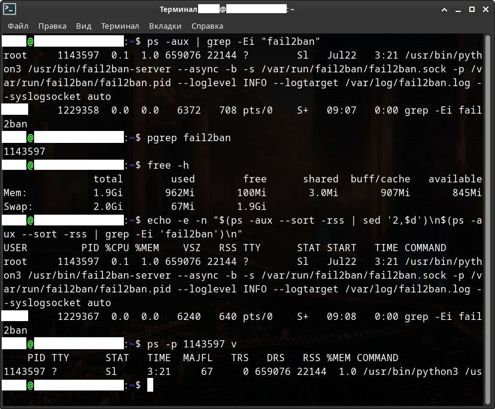
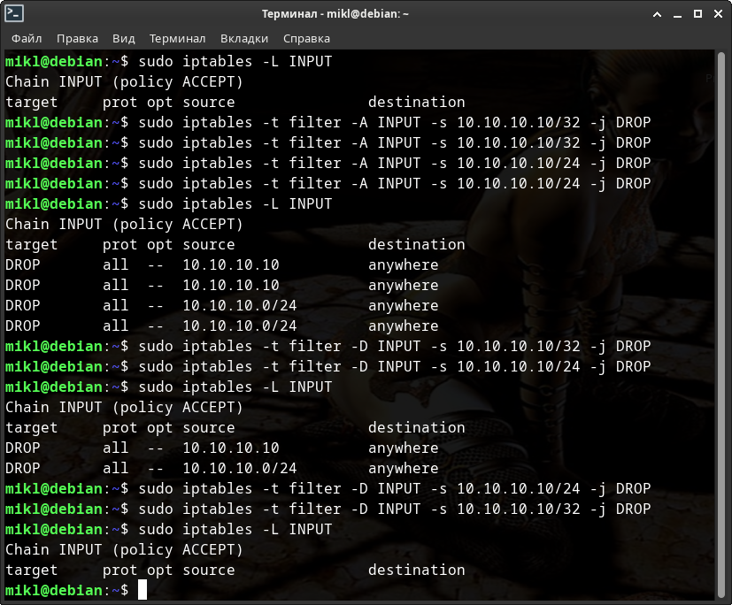

Чёрный список Чёрной Бороды.
Большое руководство по чёрным спискам IP-адресов.
Для начала давайте с вами определимся с основными понятиями:
- Что такое угроза?
- Что такое признак атаки?
- Как узнать о том, что сервер находится в большой опасности?
- Что вообще такое фаервол, и какие они бывают в Linux-ах.
- И многое другое ...
После чего посмотрим каким образом блокировать и разблокировать угрозы безопасности.
Далее определимся с пониятием черных и белых списков и зачем они вообще нужны.
Посмотрим с вами на реальные примеры и виртуального и реального (VPS) серверов.
И наконец, на примере виртуального сервера в разы усилим его безопасность.
Итак, приступим.
Оглавление
- Что можно сделать с украденными личными данными?
- Введение.
- Одновременный доступ к файлам журналов.
- Межсетевые экраны.
- История, определения.
- Netfilter.
- Таблицы и цепочки IPTables.
- NFTABLES.
- UFW / Firewalld.
- Примеры использования UFW / Firewalld.
- Fail2ban.
- NGINX / Nginx Proxy Manager.
- Черный и белый списки.
- Черный и белый список. Введение.
- Скрипты.
- Версии скриптов.
- Символическая ссылка в «/usr/bin/».
- Работа с логами, командами и выводом информации.
- Работа с черным и белым списками.
- IP(6)TABLES / NFTABLES.
- Работа с таблицами и цепочками.
- Сервисные команды скрипта.
- Systemd.
- Использование скриптов в Fail2ban.
1. Что можно сделать с украденными личными данными?
Однажды человека может разбудить неожиданный звонок с требованием вернуть долг, а в почтовом ящике окажется повестка в суд. Но кредитов он не брал, закон не нарушал.
Чтобы взять кредит в крупном банке, одних паспортных данных недостаточно: потребуется хотя бы копия документа. А вот оформить микрозаем в интернете можно с помощью сведений с первых страниц паспорта — номера, даты выдачи, кода подразделения и места рождения.
Обратившись в несколько микрофинансовых организаций, мошенники получат существенную сумму на свои карты — а затем исчезнут, оставив жертву с долгами.
Пользуясь данными чужого паспорта, мошенники регистрируют фирму-однодневку. Так они безнаказанно творят темные дела: уклоняются от налогов или собирают с обычных людей деньги за предзаказ дорогих товаров.
Когда обман вскроется, мошенники заберут деньги и останутся вне подозрений — а вот владельцу паспорта придется объясняться с полицией.
Некоторые интернет-магазины предлагают клиентам покупать товары в рассрочку: чтобы забрать вещь, нужно указать паспортные данные, а оплатить покупку можно позже.
Это на руку мошенникам: они заказывают товар по чужому документу, а курьеру говорят, что покупку получит другой человек — не владелец паспорта. Предупрежденный курьер спокойно отдает дорогую вещь аферисту, но расплачиваться за нее должен ничего не подозревающий владелец паспорта.
Если у «заемщика» хорошая кредитная история, рассрочку, скорее всего, одобрят. Правда, техника попадет в руки мошенникам, а расплачиваться придется вам.
Зная ФИО жертвы и адрес регистрации, мошенники подделывают квитанции на оплату штрафов от государственных органов.
По номеру паспорта на сайте налоговой службы легко узнать ИНН: этот номер поможет придать письму из налоговой убедительности и сообщить жертве об огромной задолженности.
Чтобы оплатить «штраф» и избежать суда, аферисты просят как можно скорее воспользоваться вложенной квитанцией.
Мошенники, которые обманывают людей в интернете, часто просят жертв выслать им деньги на электронный кошелек — поэтому аферистам выгодно использовать чужие данные. Так вся ответственность за мошенничество ляжет на плечи подставного владельца кошелька, а настоящие преступники останутся незамеченными.
Чтобы изготовить паспорт, которым преступник сможет полноценно пользоваться, недостаточно подделать водяные знаки — паспорт с фальшивыми данными не пройдет ни одну проверку в электронных базах.
Поэтому мошенники используют информацию из настоящего документа, а фотографию в фальшивый паспорт вклеивают свою. По паспорту с реальными данными, но фотографией афериста можно брать кредиты в мелких организациях, не вызывая подозрений, — а отвечать по долгам придется владельцу настоящего паспорта.
Выяснить номер телефона по паспортным данным несложно. Многие указывают его на страницах в соцсетях или на страницах-визитках, которые можно найти, просто набрав имя и фамилию жертвы в поисковике.
Мошенник размещает объявление о продаже дорогой вещи по бросовой цене: утверждает, что надо продать срочно, поэтому и скидка большая. А так как цена привлекательная, то и желающих много, поэтому аферист настаивает на предоплате: чтобы не терять время, если покупатель вдруг передумает. В качестве гарантии липовый продавец высылает скан паспорта — разумеется, чужого, а после получения денег перестает отвечать на сообщения.
Это только цветочки, а бывают и ягодки!
Это только для того, чтобы вы относились к безопасности вашего сервера серьёзно! Даже если у вас простенький сайт без каких-либо конфидециальных данных.
2. Введение.
Немного напугал, перейдём к теме серверов и их безопасности.
Защита информации становится необходимостью для предотвращения потенциальных угроз и минимизации рисков.
Защита информации обеспечивает личную безопасность и приватность, предотвращает утечку личных данных и защищает от возможных мошеннических действий.
Под термином «угроза» следует понимать любое программное средство, косвенно или напрямую способное нанести ущерб компьютеру, сети, информации или правам пользователя (то есть вредоносные и прочие нежелательные программы). В более широком смысле термин «угроза» может означать любую потенциальную опасность для компьютера или сети (то есть ее уязвимость, которая может быть использована для проведения хакерских атак).
Сетевая атака – это вторжение в операционную систему удаленного компьютера. Злоумышленники предпринимают сетевые атаки, чтобы захватить управление над операционной системой, привести ее к отказу в обслуживании или получить доступ к защищенной информации.
Следует понимать, что защита от взлома серверов — это комплекс мер, в том числе подразумевающий постоянный мониторинг работы сервера и работу по совершенствованию защиты. Невозможно защитить сервер от внешнего доступа раз и навсегда, ведь каждый день обнаруживаются новые уязвимости и появляются новые способы взлома сервера.
Основной признак попыток — «подозрительная активность» в логах. Это могут быть регулярные попытки подключения с разных IP-адресов, запросы к различным портам сервера, запросы на те или иные ресурсы.
Лог (log) — это текстовый файл, куда автоматически записывается важная информация о работе системы или программы. Чаще всего говорят о логах сервера. Их записывает программное обеспечение, которое управляет внутренней частью сайта или онлайн-системы. Лог-файл — своеобразный журнал событий.
В логи записываются сведения об ошибках, действиях пользователей и других событиях, которые происходят на сервере или в системе.
Чтобы обнаружить угрозу, необходимо регулярно анализировать все логи, начиная с системных, и заканчивая логами различных утилит, которые работают на вашем сервере.
Однако, анализировать логи вручную - не самая лучшая затея, хотя и вполне возможная. Для анализа логов существуют специальнные утилиты автоматического анализа и блокирования несанкционированного доступа. В простейшем случае они анализируют логи на подозрительную активность и при необходимости блокируют все попытки несанкционированного получения доступа на те или иные ресурсы сервера.
Что значит несанкционированного?
Несанкционированно - осуществляемый без санкции, официального разрешения. Т.е. в нашем случае при самом простом способе прямого входа на ваш веб-сайт через веб-браузер вы увидите в логах действительные статусы состояний сервера. При любой попытке обойти формы ввода логина и пароля, даже напрямую вручную через браузер, в логи будет выведен совершенно другой статус состояния вашего сайта или всего сервера. При этом там же будут отображены все попытки запросов и все адреса и порты, на которые происходили запросы. В случае же использования любых утилит - не браузеров - эта информация сразу же отобразится в логах.
Обычно любая утилита или программа (не важно Windows или Linux) во время запроса обязательно вставляет в посылаемый на сервер запрос (пакет) минимальную информацию о себе. В случае же хакерских утилит такой информации не будет.
Посмотрим на частичный лог одного веб-сайта. IP-ардеса и некоторые другие данные лога я закрасил в целях безопасности.
Мы здесь можем видеть - что некий IP-адрес (пользователь, закрашен в самой левой части перед датой и временем) делает GET-запрос. При этом у адреса есть операционная система, и делает он свой запрос через браузер Google-chrome. Ну и соответственно видим дату и время запроса, а также статус состояния сайта, т.е. ответ веб-сайта.
Судя по этой скудной информации мы можем сделать вывод о том, что некий пользователь напрямую через веб-браузер, т.е. санкционированно, обращался к некому веб-сайту.
В последних 2 строках GET-запросы происходили не через браузер и с помощью утилиты Curl. При этом видим также и версию этой утилиты.
В этих последних строках из-за статуса состояния сайта мы можем сделать вывод о том, что запрос хоть и был санкционированный, но не прямой, т.е. не через веб-браузер, и к этому стоит присмотреться.
Существуют утилиты не только для автоматического мониторинга работы сервера и его доступности в интернете, но и оповещения по электронной почте или СМС в случае обнаружения проблем.
Причём располагать утилиты мониторинга доступности сервера в интернете и оповещений непосредственно на самом сервере - не самая лучшая затея, хотя и вполне реализуемая и частенько практикуемая. Практикуемая именно потому что денег на второй сервер только для мониторинга нет. Такие утилиты вполне можно установить на сервер в виртуальной машине, которая будет не доступна из интернета, тем самым защищена. Она же и будет производить мониторинг работы и оповещать в случае проблем. Однако, не все могут оставить работать свой ПК с работающей виртуальной машиной на круглосуточную работу ради одного сервера. Обычно так делают когда серверов много.
Кстати говоря, любые подобные утилиты мониторинга и оповещений вполне можно создать самостоятельно.
Сегодня мы с вами рассмотрим одну из утилит для блокировки вторжений на сервер. Рассматривать утилиты оповещений и мониторинга сегодня мы не будем.
Однако, это не говорит о том, что при использовании утилит блокировок вам не нужно будет использовать утилиты мониторинга или антивирусные средства. Как раз наоборот.
Просто базовое понимание утилит блокировки даст вам понимание того, как запускать все программы и под-программы мониторинга, блокировок и оповещений одновременно так, чтобы данные получаемые из логов были на тот момент актуальными и одинаковыми для всех утилит. Иначе вы можете столкнуться с тем, что для одной из программ в логах у вас будут одни данные, для другой уже другие. В результате одна из утилит просто не сработает во время. Или вообще пропустит важные данные для обработки результата.
Чем это чревато? Надеюсь, вы и сами понимаете!
Также, этот же момент не говорит о том, что вам всё равно не придётся создавать регулярные резервные копии данных сайта или всего сервера. Потому что взломать можно всё что угодно! Было бы желание. Вот как раз на случай проникновения и/или захвата управления, чтобы иметь возможность быстро восстановить сервер после атаки, как раз и нужны резеревные копии данных.
Помимо описанного, необходимо регулярно следить за обновлениями программного обеспечения и операционной системы сервера. Обновления обычно устраняют уязвимости, которые могут использоваться для проведения атак.
3. Одновременный доступ к файлам журналов.
При чтении или записи любого файла создаётся так называемый файловый дескриптор.
Файловый дескриптор — это неотрицательное число, которое является идентификатором потока ввода-вывода. Дескриптор может быть связан с файлом, каталогом, сокетом.
Например, когда вы открываете или создаете новый файл, операционная система формирует для себя запись для представления этого файла и хранения информации о нем. У каждого файла индивидуальный файловый дескриптор Linux.
В Linux библиотека libc открывает для каждого запущенного приложения(процесса) 3 файл дескриптора, с номерами 0,1,2.
- Файл дескриптор 0 называется STDIN и ассоциируется с вводом данных у приложения.
- Файл дескриптор 1 называется STDOUT и используется приложениями для вывода данных, например командами print.
- Файл дескриптор 2 называется STDERR и используется приложениями для вывода данных, сообщающих об ошибке.
Если в вашей программе вы откроете какой-либо файл на чтение или запись, то скорее всего вы получите первый свободный ID и это будет номер 3.
Файл дескриптор с номером 255 можете смело игнорировать, он был открыт для своих нужд уже самим bash, а не прилинкованной библиотекой.
Например, откроем консоль с bash и посмотрим PID нашего процесса.
[user@localhost Загрузки]$ echo $$ 11644 [user@localhost Загрузки]$ ls -lha /proc/11644/fd/ итого 0 dr-x------ 2 user users 0 июл 22 08:26 . dr-xr-xr-x 9 user users 0 июл 22 08:26 .. lrwx------ 1 user users 64 июл 22 08:26 0 -> /dev/pts/1 lrwx------ 1 user users 64 июл 22 08:26 1 -> /dev/pts/1 lrwx------ 1 user users 64 июл 22 08:26 2 -> /dev/pts/1 lrwx------ 1 user users 64 июл 22 08:26 255 -> /dev/pts/1 [user@localhost Загрузки]$
Сейчас все 3 файл дескриптора связаны с устройством псевдотерминала /dev/pts, но мы все равно можем ими манипулировать, например запустим во второй консоли.
[user@localhost ]$ echo "hello world" > /proc/11644/fd/0
И в первой консоли мы увидим.
[user@localhost ]$ hello world
Вы можете легко переопределить эти 3 файл дескриптора в любом процессе, в том числе и в bash, например через трубу(pipe), соединяющую два процесса.
Продолжение смотрите в статье: «Файл дескриптор в Linux с примерами».
Допустим нас есть некий лог-файл, в который постоянно ведётся запись разных данных. Например, в лог-файл NGINX-а запись будет производиться только при поступления запроса на сервер и только на тот веб-адрес, который имеется в настройках конфигурации.
К примеру, у нас есть несколько программ в виде коротких скриптов, которые постоянно с разными временными задержками анализируют этот лог-файл.
Возникает логичный вопрос: А одинаковые ли будут данные у каждого из этих скриптов для анализа?
Проведём небольшой эксперимент. Для этого создадим 3 разных скрипта. Один будет записывать данные в некий предопределённый нами лог-файл, а 2 других читать этот лог и выводить результат чтения на экран.
Файл «./write.sh». Здесь мы будет 10 раз записывать время с секундами и наносекундами в лог-файл «./text.log», но с задержкой между записями в 2 секунды. Т.е. итоговое время выполнения, по идее, должно быть 18 секунд, включая вывод на экран.
$ nano ./write.sh
#!/bin/bash
echo "" > text.log
for x in {1..10}; do
_date=$(date '+%H:%M:%S:%N')
_random=$(echo "${_date}" | rev | cut -d ':' -f1 | rev)
echo "${_date} - ${_random}"
echo "${_date} - ${_random}" > text.log
sleep 2
done
exit 0
CTRL + o
CTRL + x
Файл «./read.sh». Здесь мы будет читать наш лог-файл «./text.log», но вместо простого вывода содержимого на экран будем подсчитать количество строк в этом файле, что будет несколько нагляднее. Читать будем 3 раза с задержкой открытого файла дескриптора на 1 секунду в каждый цикл чтения. Итоговое время выполнения, по идее, должно быть 3 секунды.
$ nano ./read.sh
#!/bin/bash
for x in {1..3}; do
date '+%H:%M:%S:%N'
count=0
while read line; do
let count+=1
sleep 1
done <text.log
echo "${count}"
date '+%H:%M:%S:%N'
echo ""
done
exit 0
CTRL + o
CTRL + x
Файл «./read2.sh». Ну а в этом скрипте мы также будем читать наш лог-файл «./text.log», но с задержкой файла-дескриптора уже на 2 секунды при каждом цикле чтения. Итоговое время выполнения, по идее, должно быть 6 секунд.
$ nano ./read2.sh
#!/bin/bash
for x in {1..3}; do
date '+%H:%M:%S:%N'
count=0
while read line; do
let count+=1
sleep 2
done <text.log
echo "${count}"
date '+%H:%M:%S:%N'
echo ""
done
exit 0
CTRL + o
CTRL + x
Теперь, откроем 3 разных косноли и попытаемся быстро-быстро запустить эти скрипты одновременно. Разумеется они будут работать не одновременно. Однако, из-за временных sleep задержек это будет не важно.
Смотрим на результат.

Как видите, и в первой и во второй консоли, из-за того, что скрипты долго держат файловый дескриптор открытым, они продолжают читать старый файл. Таким образом скрипты продолжает использовать старые данные и не успевают получить новые для обработки, в то время как в лог-файл уже была произведена запись и он был обновлён.
Более того, 2-й скрипт «./read2.sh» вообще потерял много данных, а задержка была неоправдано долго и в данном случае именно из-за того, что файловый дескриптор уже был открыт другим процессом, т.е. занятым в этот момент.
В простонародье говорят, что файл-журнала успел отротироваться, в то время как один из скриптов продолжает читать старый файл, уже после его ротации. При этом, открытый файловый дескриптор на чтение не позволяет другому скрипту прочитать тот же самый файл, и второму скрипту приходится ждать закрытия файлового дескриптора.
Под таким понятием как «ротация» подразумевается переодическая и в тоже время последовательная и целенаправленная смена чего-то или же кого-то.
В итоге, из-за такой, казалось бы, простой операции как «Чтение файла» - образовалась маленькая локальная война за ресурсы, в результате которой было потеряно много данных.
Проблема чтения данных ещё состоит и в том, что практически все утилиты или скрипты анализа лог-файлов могут быть очень разными и сложными, или наоборот простыми. Какие-то из них потребляют мало оперативной памяти, а какие-то напротив - очень много.
Уменьшать время работы одной из утилит ради ускорения обработки данных очень и очень плохая затея! Ведь таким образом вы можете чрезмерно нагрузить и процессор и оперативную память. А если у вас VPS или VDS сервер с ограниченным количеством ресурсов - в результате вы можете просто напросто зависнуть. Да-да, в Linux-е и зависнуть. Это не шутка!
Этот маленький эксперимент должен был сказать вам не о том, что необходимо уменьшать время запуска тех или иных программ или скриптов анализа, а о том, что анализировать данные лучше какой-то одной единственной утилитой, и уже в ней, внутри, запускать все остальные необходимые вам внешние скрипты и программы обработки результатов, при обнаружении проблем. При условии, что такая функция запуска внешних скриптов или программ имеется внутри утилиты анализа.
Обычно, у всех программ и утилит анализа имеются специальные макросы для запуска внешних программ или скриптов для обработки результатов или запуска какого-нибудь действия / противодействия в самой ОС.
Если же возможности самого анализа как такового ограничены - тогда да, запуск отдельной программы или отдельного скрипта в системе по таймеру - будет хорошим выходом из ситуации.
Но, тогда вы, скорее всего, будете вынуждены подбирать и калибровать время запуска по таймеру только ради 2 вышеуказанных условий - аткуальность данных и нагрузка на оперативную память.
Актуальность данных подразумевает несколько важных пунктов.
- Как часто обновляется нужный вам лог-файл, т.е. как часто в него записываются новые данные?
- Как часто необходимо анализировать лог-файл?
В зависимости от данных ответов настраивается время таймера.
Нагрузка же на процессор имеет немного более высокий приоритет. Для корректной настройки вам также необходимо будет ответить на пару вопросов.
- Сколько максимально в пике оперативной памяти потребляет ваша утилита или скрипт?
- Как сильно ваша утилита или скрипт нагружают процессор?
Последние 2 вопроса имеют место быть, в случае, когда утилита имеет внутри себя множество различных сложных вычислений. В таком случае стоит задуматься насчет частоты запуска и соответственно об увеличении времени таймера для её запуска.
При этом как именно будет запускаться утилита или скрипт не особо играет роли - будь то системный systemd-таймер или процесс запущенный из под сервиса cron, т.е. crontab.
4. Межсетевые экраны.
Содержание главы.
- История, определения.
- Netfilter
- Таблицы и цепочки IPTables.
- NFTABLES.
- UFW / Firewalld.
- Примеры использования UFW / Firewalld.
4.1. История, определения.
Рассмотрим первую линию обороны - межсетевые экраны.
Брандмауэр, фаервол или межсетевой экран – это система, которая выполняет роль защитной стены между глобальным интернетом и устройством пользователя.
Брандмауэр фильтрует всю входящую информацию и не пропускает вредоносный контент и вирусы.
Брандмауэры, как правило, контролируют двунаправленный поток трафика, поэтому представьте себе брандмауэр перед организацией, отделяющий ее от общедоступного Интернета. Он должен иметь возможность блокировать входящий трафик, чтобы попытаться удержать злоумышленников, но он также должен иметь возможность разрешать исходящий трафик, потому что людям нужно просматривать веб-страницы, отправлять электронные письма и иметь связь, которая выходит за пределы сети.
Наиболее распространённое место для установки межсетевых экранов — граница периметра локальной сети для защиты внутренних хостов от атак извне. Однако атаки могут начинаться и с внутренних узлов — в этом случае, если атакуемый хост расположен в той же сети, трафик не пересечёт границу сетевого периметра, и межсетевой экран не будет задействован. Поэтому в настоящее время межсетевые экраны размещают не только на границе, но и между различными сегментами сети, что обеспечивает дополнительный уровень безопасности.
Программные межсетевые экраны появились существенно позже и были гораздо моложе, чем антивирусные программы. Например, проект «Netfilter/iptables» (один из первых программных межсетевых экранов, встраиваемых в ядро Linux с версии 2.4) был основан в 1998 году.
Фильтрация трафика осуществляется на основе набора предварительно сконфигурированных правил, которые называются ruleset. Удобно представлять межсетевой экран как последовательность фильтров, обрабатывающих информационный поток. Каждый из фильтров предназначен для интерпретации отдельного правила. Последовательность правил в наборе существенно влияет на производительность межсетевого экрана. Например, многие межсетевые экраны последовательно сравнивают трафик с правилами до тех пор, пока не будет найдено соответствие.
Существует два принципа обработки поступающего трафика. Первый принцип гласит: «Что явно не запрещено, то разрешено». В данном случае, если межсетевой экран получил пакет, не попадающий ни под одно правило, то он передаётся далее. Противоположный принцип — «Что явно не разрешено, то запрещено» — гарантирует гораздо большую защищённость, так как он запрещает весь трафик, который явно не разрешён правилами. Однако этот принцип оборачивается дополнительной нагрузкой на администратора.
В конечном счёте межсетевые экраны выполняют над поступающим трафиком одну из двух операций: пропустить пакет далее (allow) или отбросить пакет (deny). Некоторые межсетевые экраны имеют ещё одну операцию — reject, при которой пакет отбрасывается, но отправителю сообщается о недоступности сервиса, доступ к которому он пытался получить. В противовес этому, при операции deny отправитель не информируется о недоступности сервиса, что является более безопасным.
Перейти к оглавлению. Перейти к главе.
4.2. Netfilter.
Посмотрим на компаненты, которые входят в состав Netfilter.

Все компаненты обозначенные голубым цветом - это пользовательские утилиты, т.е. програмная часть, с помощью которых осуществляется доступ к нижележащим таблицам фильтрации и преобразования пакетов. У «{ip,ip6,arp,eb}tables» в итоге к «Xtables», соответственно у «iptables-nftables» и «nft» к «nf_tables».
Долгое время «Xtables», встроенная в ядро, считалась единственным способом управления Netfilter-ом.
iptables — утилита командной строки для настройки встроенного в ядро Linux межсетевого экрана, разработанного в рамках проекта Netfilter.
Термином iptables также часто называют сам межсетевой экран в ядре. Настройка экрана выполняется либо напрямую с помощью iptables, либо через один из фронтендов, консольных или графических. iptables работает с протоколом IPv4, для IPv6 разработана утилита ip6tables. В основном их синтаксис совпадает, но некоторые специфичные для протоколов опции различаются.
Тем временем постепенно развивался проект «nf_tables». Проект должен и выступил в качестве замены существующего фреймворка «{ip,ip6,arp,eb}tables» в 2021 году.
Этот проект предоставляет новую систему фильтрации пакетов, пользовательскую утилиту ntf, а также слой совместимости с {ip,ip6}tables. nftables использует существующие хуки, отслеживание соединений, очереди в пространстве пользователя и подсистему логирования netfilter.
Фреймворк iptables постепенно выходит из употребления; более современная замена — nftables, в котором предусмотрен слой совместимости.
В Debian 11 фреймворк nftables встроен в систему по умолчанию со слоем совместимости для iptables.
IPTABLES умер в 2021 году. Он конечно всё ещё встроен во многие системы, но постепенно будет полностью заменён на более эффективный NFTABLES.

Плохая новость: документация «NFTABLES» («nft»: man nft) содержит больше 3 тысяч строк.
Для облегчения перехода можно конвертировать правила iptables в nftables с помощью утилит iptables-translate, iptables-restore-translate, iptables-nft-restore и т.п. Утилиты находятся в пакете iptables, который необходимо установливать отдельно.
Грубо говоря, Netfilter по сути является как бы внутренней обороной ОС. Однако, самой ОС нужна ещё и внешняя оборона - инструмент или средство для управления брандмауэром, такие как UFW или Firewalld.
UFW (Uncomplicated Firewall) - является самым простым и довольно популярным инструментарием командной строки для настройки и управления брандмауэром.
Firewalld — программное обеспечение для управления брандмауэрами, поддерживаемое многими дистрибутивами Linux.
Чтобы понять как работает фильтрация пакетов в межсетевых экранах, для этого надо заглянуть в раздел «Таблицы и цепочки IPTABLES».
Перейти к оглавлению. Перейти к главе.
4.3. Таблицы и цепочки IPTables.
Чтобы разобрать работу Netfilter/iptables возьмём схему работы из википедии.
Ну, а для базового понимания схемы разберём с вами основные понятия: таблицы, цепочки, действия над пакетами и механизм определения состояния.
Каждый из пунктов важен для понимания работы любого межсетевого экрана.
Цепочки.
- PREROUTING - для изначальной обработки входящих пакетов.
- INPUT - для входящих пакетов, адресованных непосредственно локальному компьютеру.
- FORWARD - для проходящих (маршрутизируемых) пакетов.
- OUTPUT - для пакетов, создаваемых локальным компьютером, т.е. исходящих.
- POSTROUTING - для окончательной обработки исходящих пакетов.
Цепочки можно создавать самостоятельно, и также их уничтожать.
Почти в каждой цепочке имеется 4 таблицы:
- raw - пакет проходит данную таблицу до передачи системе определения состояний. Используется редко, например для маркировки пакетов, которые НЕ должны обрабатываться системой определения состояний. Для этого в правиле указывается действие NOTRACK. Содержитcя в цепочках PREROUTING и OUTPUT.
- mangle - содержит правила модификации IP‐пакетов. Среди прочего, поддерживает действия TTL, TOS, и MARK (для изменения полей TTL и TOS, и для изменения маркеров пакета). Редко необходима и может быть опасна.
- nat - предназначена для подмены адреса отправителя или получателя. Данную таблицу проходят только первый пакет из потока, трансляция адресов или маскировка (подмена адреса отправителя или получателя) применяются ко всем последующим пакетам в потоке автоматически. Поддерживает действия DNAT, SNAT, MASQUERADE, REDIRECT. Содержится в цепочках PREROUTING, OUTPUT, и POSTROUTING.
- filter - основная таблица, используется по умолчанию если название таблицы не указано. Используется для фильтрации пакетов. Содержится в цепочках INPUT, FORWARD, и OUTPUT.
Действия над пакетами.
- ACCEPT - принять пакет.
- DROP - отбросить пакет, при этом пакет не передается в другие таблицы/цепочки.
- REJECT - отбросить пакет, отправив отправителю ICMP-сообщение, при этом пакет не передается в другие таблицы/цепочки.
- RETURN - возвратить пакет в предыдущую цепочку и продолжить ее прохождение начиная со следующего правила.
- SNAT - применить трансляцию адреса источника в пакете. Может использоваться только в цепочках POSTROUTING и OUTPUT в таблицах nat.
- DNAT - применить трансляцию адреса назначения в пакете. Может использоваться в цепочке PREROUTING в таблице nat.
- LOG - протоколировать пакет и обработать остальными правилами.
- MASQUERADE - используется вместо SNAT при наличии соединения с динамическим IP (допускается указывать только в цепочке POSTROUTING таблицы nat).
- MARK - используется для установки меток на пакеты, передается для обработки дальнейшим правилам.
Есть и другие действия. Остановимся на базовых.
Механизм определения состояний (conntrack).
В общем, механизм определения состояний (он же state machine, он же connection tracking, он же conntrack) является частью пакетного фильтра и позволяет определить определить к какому соединению/сеансу принадлежит пакет.
Conntrack анализирует состояние всех пакетов, кроме тех, которые помечены как NOTRACK в таблице raw. На основе этого состояния определяется принадлежит пакет новому соединению (состояние NEW), уже установленному соединению (состояние ESTABLISHED), дополнительному к уже существующему (RELATED), либо к "другому" (неопределяемому) соединению (состояние INVALID). Состояние пакета определяется на основе анализа заголовков передаваемого TCP-пакета. Модуль conntrack позволяет реализовать межсетевой экран сеансового уровня (пятого уровня модели OSI). Для управления данным механизмом используется утилита conntrack, а так же параметр утилиты iptables: -m conntrack или -m state. Состояния текущих соединений conntrack хранит в ядре. Их можно просмотреть в файле /proc/net/nf_conntrack (или /proc/net/ip_conntrack).
Итак, разберём схему работы.
Пакет (из интернета в сеть, затем) из сети обязательно проходит цепочку PREROUTING, далее попадает в таблицу маршрутизации и в зависимости от принадлежности определяет куда пойдёт дальше. Если пакет не адресован локальной системе, он попадёт в цепочку FORWARD. Если адресован - в цепочку INPUT. После INPUT пакет обрабатывают системные процессы и демоны. После локальной обработки программы могут сформировать ответ и этот ответ в соответствии с правилами маршрутизации направляется в цепочку OUTPUT. Затем снова маршрутизируется и наконец попадает в цепочку POSTROUTING, как и пакет из цепочки FORWARD. И только после всех этих манипуляций с пакетом он наконец вновь отправляется обратно в сеть и уже дальше в интернет, если стоит такая задача.
Почему пакет несколько раз проходит через таблицу маршрутизации?
Каждая цепочка, которую проходит пакет состоит из набора таблиц (table). Таблицы в разных цепочках имеют одинаковое наименование, но тем не менее никак между собой не связаны. Например таблица nat в цепочке PREROUTING никак не связана с таблицей nat в цепочке POSTROUTING. Каждая таблица состоит из упорядоченного набора (списка) правил. Каждое правило содержит условие, которому должен соответствовать проходящий пакет и действия к пакету, подходящему данному условию.
Проходя через серию цепочек пакет последовательно проходит каждую таблицу и в каждой таблице последовательно сверяется с каждым правилом, и если пакет соответствует какому-либо критерию, то выполняется заданное действие над пакетом. При этом, в каждой таблице (кроме пользовательских) существует заданная по-умолчанию политика. Данная политика определяет действие над пакетом, в случае, если пакет не соответствует ни одному из правил в таблице. Чаще всего - это действие ACCEPT, чтобы принять пакет и передать в следующую таблицу или DROP - чтобы отбросить пакет. В случае, если пакет не был отброшен, он завершает свое путешествие по ядру системы и отправляется в сетевой интерфейс, которая подходит по правилам маршрутизации.
Таблица nat и mangle может модифицировать получателя или отправителя сетевого пакета. Именно поэтому сетевой пакет несколько раз сверяется с таблицей маршрутизации.
Блокировку и разблокировку ip-адресов, разрешающие и запрещающие правила, а также сохранение состояния при перезагрузке ОС вы можете посмотреть в статье: «Безопасность сетевых соединений: 6. Блокировка ip адреса или всей подсети».
Перейти к оглавлению. Перейти к главе.
4.4. NFTABLES.
В отличие от iptables, в nftables отсутствуют встроенные таблицы. Количество таблиц и их имена определяется пользователем. Тем не менее, каждая таблица имеет только одно семейство адресации и применяется к пакетам только этого семейства.
В отличие от iptables, в nftables отсутствуют встроенные цепочки. Соответственно, если опрелённые типы или хуки фреймворка netfilter не задействованы ни в одной цепочке, то проходящие через эти цепочки пакеты обрабатываться не будут (в отличие от iptables).
Есть два типа цепочек. Базовая цепочка является точкой входа для пакетов из сетевого стека; в ней указывается хук. Обычная цепочка может использоваться в качестве цели перехода и используется для лучшей организации правил.
Все спрашивают почему я так люблю Acrhlinux - как минимум за его прекрасную векипедию. Поэтому более подробную информацию о работе с NFTABLES вы можете найти на его страницах в статье: «ArchWiki: nftables (Русский)», а если вам будет мало этой информации и у вас по прежнему останутся пару вопросов - добро пожаловать в статью на losst.pro: «losst.pro: Как пользоваться nftables».
В этих статья подробно с разъяснено как работать с NFTABLES. Словом, мне дополнить нечем. Читайте внимательно, тогда ничего не пропустите и вам всё будет понятно.
Разьве что раздел установки для разных дистрибутивов Linux будет у всех разный. Во всём остальном - и настройки и работа с фреймворком будет абсолютно одинаковой.
Но самое главное в том, что знание схемы движения пакетов в системе IP(6)TABLES даёт вам базовое понимание того, какие таблицы и цепочки с предопределёнными типами и хуками для работы вашего сервера нужно будет создавать, а также какие правила и приоритеты устанавливать для этих цепочек. Понимание работы IP(6)TABLES значительно ускоряет процес настройки.
Также уделите внимание Firewalld, ибо с ним, вам в разы меньше придётся создавать различных таблиц, цепочек и правил поведения вашего сервера, включая nat-преобразование адресов, в разы будет усилена защита, но также может и в разы усложниться жизнь при работе с различными сервисами в т.ч. базами данных.
Перейти к оглавлению. Перейти к главе.
4.5. UFW / Firewalld.
Cерверы постоянно подвергаются различным атакам или сканируются в поиске уязвимостей. Как только эти уязвимости находятся, мы рискуем стать частью ботнета, раскрыть конфиденциальные данные или потерять деньги из-за сбоев в работе веб-приложений. Одной из первых мер по снижению рисков безопасности является грамотная настройка правил межсетевого экрана.
UFW (Uncomplicated Firewall) — удобный интерфейс для управления политиками безопасности межсетевого экрана. Он представляет собой интерфейс iptables, предназначенный для упрощения процесса настройки брандмауэра. Хотя iptables — надежный и гибкий инструмент, начинающим бывает сложно научиться использовать его для правильной настройки брандмауэра.
Подробно об установке и настройке UFW фаервола вы можете посмотреть в статье: «Безопасность сетевых соединений: 4. Фаерволы: 4.1. Фаервол UFW».
По сути UFW и Firewalld это фасад сервера, а {IP,IP6,ARP,EB}Tables / NFTables - это интерьер.
Firewalld - более продвинутая утилита управления Linux брандмауэром Netfilter. Несмотря на собственный синтаксис, имеет такой же принцип работы, как и Iptables.
В отличие от IPTABLES имеет более продвинутую безопасность, настройки, стабильную работу, а также сохранение правил фильтрации и маршрутизации без лишних скриптов и сервисов, и многое другое.
Подробно об установке и настройке Firewalld фаервола вы можете посмотреть в статье: «Безопасность сетевых соединений: 4. Фаерволы: 4.2. Фаервол Firewalld».
Удивительно, но Docker не работает из коробки с UFW, т.е. «Universal Firewall» Linux.
Проблема в том, что UFW и Docker пытаются изменить одни и те же базовые правила брандмауэра. В результате фаервол разрешает трафику идти дальше к Docker-контейнерам.
Допустим вы настроете базовый брандмауэр UFW на запрет по умолчанию и сделаете разрешение по HTTP и SSH портам. Однако, UFW не будет блокировать доступ к Docker-контейнерам, которые привязаны к другим портам.
Эту проблему может быть трудно обнаружить, поскольку UFW и Docker – это отдельные системы.
Тем не менее, UFW покажет, что всё настроено верно и с вашего рабочего места так и будет выглядеть, даже с учетом белого списка доступа. В результате вам будет казаться что всё в порядке. Но это не так!
Если какое-либо приложение запущено через Docker, например на порту 8000, то по умолчанию это приложение будет видно из любого места за пределами сервера.
Это может стать серьезной проблемой, если вы не решите ее! Потому что у любого пользователя интернета появляется возможность обращаться к любым сервисам внутри сервера по портам, включая и базы данных, и сервисы контроля баз (например, PHPMyAdmin). При этом пределить доступные порты для подключения абсолютно не сложно.
Для совмещения Docker-а и UFW воспользуйтесь статьёй: «Как использовать Docker с UFW параллельно».
Однако, не спешите переходить по ссылке. В данной статье используются решения, основанные на IPTABLES, фреймворке, который постепенно выходит из употребления.
Эти правила специфичны для каждого отдельного сервера и их придётся корректировать, чтобы они работали правильно. А самое забавное в том, что когда вы будете запускать какой-то новый Docker-контейнер - правила снова придётся корректировать. Плюс ко всему их обязательно необходимо восстанавливать при перезапуске ОС.
Не факт, что у вас получится, но если получится - вы счастливчик. Но, опять таки, не спешите радоваться. Потому что ваша настройка, скорее всего, продержится максимум лет 5...10, пока последний фреймворк полностью не заместит всеми любимый IPTABLES.
Из сложившейся ситуации есть выход - фаервол Firewalld.
В свою очередь он требует тщательной настройки и понимания как всё устроено! А самое главное - он легко совмещается с Docker-контейнерами.
Перейти к оглавлению. Перейти к главе.
4.6. Примеры использования UFW / Firewalld.
Вот тут начинается самое интересное!
Рассмотрим с вами несколько примеров на основе моего Archlinux на ноутбуке и виртуальной машине на Debian 11 со следующими характеристиками:
Самое главное здесь то, что сеть установлена в режиме сетевого моста. Таким образом, если в ОС нет никаких фаерволов, кроме межсетевого экрана, то все внутренние сервисы должны быть доступны в локальной сети по IP-адресу, буквально напрямую.
Последовательно произведём все, почте без исключения, настройки по порядку, согласно статье: «Базовые настройки серверов Linux», но установим и настроим, пока что, фаервол UFW.
В Docker установим 2 сервиса: Whoogle и Portainer - как наиболее простые для проведений тестов. К первому проще всего прикрутить NGINX и Fail2ban, а с помощью второго будет легче следить за всеми контейнерами.
Запуск Portainer-а:
$ cd ~
$ mkdir -p portainer-data && cd portainer-data
$ nano docker-compose.yml
version: "3"
volumes:
portainer_data:
services:
portainer:
image: portainer/portainer-ce
container_name: portainer
volumes:
- /var/run/docker.sock:/var/run/docker.sock
- portainer_data:/data
ports:
- 9000:9000
- 8000:8000
restart: always
CTRL + o
CTRL + x
$ sudo docker-compose up -d
Запуск Whoogle:
$ cd ~ $ mkdir whoogle && cd whoogle $ nano docker-compose.yml --- version: '2' services: whoogle: image: benbusby/whoogle-search:latest container_name: whoogle ports: - 5000:5000 restart: unless-stopped CTRL + o CTRL + x $ sudo docker-compose up -d
Без вышеупомянутого совмещения Docker-а и UFW все внутренние сервисы Docker-а будут доступны за пределами вашего сервера.
Проверить последнее утверждение не составит никакого труда. Можно это сделать с помощью браузера, а можно воспользоваться утилитой Curl, которая вернёт нам статусное состояние нашего NGINX.
Т.е. если мы увидим в консоли ответ в виде числа 200 - значит и в браузере мы увидим сайт или сервис виртуальной машины, расположенный по запрашиваемому веб-адресу.
При числах - вроде 1xx или 3xx - скорее всего мы сами запрашиваем неправильно, например веб-адрес.
При числах - 4xx и 5xx - это ошибки в запросе и ошибки сервера.
А вот если у нас будет число 000 - это будет значит сразу 3 вещи:
- Сервис не доступен за фаерволом.
- Настройка фаервола выполнена верно.
- и Docker с фаерволом вполне неплохо ужились на одном сервере.
Команда curl выглядит следующим образом:
curl -s -o /dev/null -w "%{http_code}\n" веб-адрес
Например.
$ curl -s -o /dev/null -w "%{http_code}\n" https://192.168.0.120/
# и
$ curl -s -o /dev/null -w "%{http_code}\n" https://192.168.0.120:9000/
# т.к. запущен сервис и whoogle и portainer
Смотрим на результат.

Без указанного совмещения всё печально. Все сервисы, какие бы у вас не были запущены будут доступны за пределами сервера - и базы данных (например, MySQL / MariaDB) и сервисы доступа к последним (например, PHPMyAdmin) и многое другое, что вы не хотели бы выпускать в открытый доступ в интернет.
Однако, есть гораздо более продвинутая альтернатива - Firewalld.
Теперь согласно указанной инструкции настройки серверов, установим и настроим Firewalld, запустим Fail2ban.
Прямой просмотр Systemd может выглядеть достаточно ёмко, т.е. занимать много экранного места. Вместо этого в systemctl существует такая операция, как «is-active». Дословно - «Check whether units are active» переводится как - «Проверка активности устройства».
Т.е. на выходе у нас будет конкретный ответ - запущен ли тот или иной сервис, сокет или таймер или нет.
Также с помощью Curl проверяем доступность запущенных docker сервисов. Я же, согласно инструкции, давал доступ только к NGINX портам - 80 и 443. 51820 в данном случае служит примером настроек wireguard.
ЧУДО СВЕРШИЛОСЬ, причём без танцев с бубном! Шутка. Но в каждой шутке...
Внутренние сервисы, к которым вы явно не давали доступа теперь не доступны за пределами самого сервера.
Это не может не радовать.
При этом лишний раз лазить в IP(6)TABLES / NFTABLES не придётся.
На самом деле дело в том, что в Firewalld имеется несколько сетей по умолчанию - внутренняя, внешняя (публичная) и другие. Это непосредственно связано с принципом работы самого фаервола как такового. Все сети разделяются разными правами доступа, разными политиками обработки пакетов, разными приоритетами и т.д. и т.п. Т.е. для любого сервиса можно настроить своё собственное поведение. Таким образом, для каждого сервиса будут разные базовые правила брендмауера, которые вы сами настроили. В итоге Docker просто перестаёт конфликтовать с фаерволом. Только если явно не указать другие настройки.
Правда появляется другой недостаток - не возможно запустить или остановить какой-либо Docker-контейнер. Для этого просто остановите сервис фаервола. Этого будет вполне достаточно.
$ sudo systemctl stop firewalld.service
Если вы настраивали фаервол по моей инструкции и создавали таймер запуска, то сначала придётся остановить этот таймер и затем уже сервис. Поработали с контейнерами - что-то остановили, что-то запустили, после этого вновь запустите только один сервис фаервола. Если у вас есть связанный с фаерволом Fail2ban, то и его и таймер, и сервис тоже надо будет остановить, а после всех работ запустить хотя бы сервис. После этого не забудьте проверить новые сети Docker-контейнеров и обязательно добавить их во внутреннюю зону internal фаервола с сохранением параметров при перезагрузке.
$ sudo systemctl stop firewalld.timer
$ sudo systemctl stop firewalld.service
$ sudo systemctl start firewalld.timer
$ sudo systemctl start firewalld.service
Перейти к оглавлению. Перейти к главе.
5. Fail2ban
Содержание главы.
Fail2Ban – программа для защиты серверов от атак методом грубой силы. Написанная на языке Python, может работать на POSIX-системах имеющих встроенный менеджер пакетов и брандмауэр. Например, IPTABLES или NFTABLES. Также работает и с Firewalld.
Описывая Fail2ban в двух словах, можно сказать, что он позволяет на основе анализа логов блокировать тех, кто злоупотребляет доступностью сервера по сети. Например, защитить почтовые ящики от взлома путем перебора паролей или многократного запроса какого-либо ресурса.
Fail2Ban считывает логи (например, /var/log/apache2/error.log) и блокирует IP-адреса, активность которых является подозрительной (например, большое количество попыток войти с неправильно введенным паролем, выполнение опасных или бессмысленных действий и т.д.). В случае обнаружения подобных действий программа обновляет правила брандмауэра для блокировки такого IP-адреса на определенный промежуток времени. Программа может быть настроена и для выполнения любых других действий (например, отправки электронного письма).
Конфигурация программы по умолчанию содержит фильтры для Apache, Lighttpd, sshd, vsftpd, qmail, Postfix, Courier Mail Server, Asterisk и других популярных серверных приложений. В фильтрах используются регулярные выражения, которые могут быть легко изменены и настроены в случае необходимости.
Говоря о слабых сторонах Fail2Ban, вы должны знать, что он не очень хорошо работает против распределенных атак методом перебора. Причина в том, что мониторинг лог-файлов происходит примерно раз в секунду. Этого должно быть достаточно в большинстве случаев, однако можно получить больше отказов входа, чем указано в параметре “maxretry”.
Таким образом мы понимаем, что во первых файловый дескриптор какого-либо лога будет практически постоянно открыт и на чтение и на запись. Поэтому обратиться к файлу того или иного журнала с помощью стороннего скрипта может оказаться проблематично. Да и во вторых эффективность у Fail2ban-а, мне кажется, будет несколько выше, чем у сторонних скриптов и утилит.
На самом деле, прописать регулярные выражения для собственных фильтров (если таковые понадобятся) не так уж и сложно, как кажется на первый взгляд. А уж тем более создать свои собственные экшены действий при обнаружении нежелательной активности.
Таким образом необходимость в сторонних скриптах и утилитах анализа практически полностью отпадает.
Нужны будут только скрипты или утилиты для работы с самими пойманными ip-адресами для того, чтобы прописать их в экшенах Fail2ban-а. Т.е. что делать с этими адресами вы решаете самостоятельно - блокировать навсегда или сделать что-то другое.
Или же вы вполне можете прописать в экшенах отправку уведомлений по электронной почте или даже по СМС. Вообщем, на что хватит фантазии ...
У Fail2Ban довольно низкие системные требования. При конфигурации только с sshd и несколькими различными правилами, Fail2Ban требует около 500 Мб памяти и загружает 1 ядро CPU в среднем менее чем на 0,2%.
Если вам нужна информация по установке и настройке Fail2ban-а, фильтрам, экшенам и действиям с разлиными примерами - обратитесь к статье: «Безопасность сетевых соединений: 5. Fail2ban.».
Перейти к оглавлению. Перейти к главе.
5.1. Оперативная память.
Прежде чем обращаться к параметрам оперативной памяти процессов в Linux системах необходимо разобраться в нескольких понятиях, без которых вы можете не только запутаться в значениях, но и неверно их истолковать. В результате у вас будут ложные сведения не совпадающие с реальностью.
Физическая память остается после отключения питания. Оперативная память после отключения питания обнуляется.
К физической памяти можно отнести и жесткие диски (ЖД), в том числе, и твердотельные, встроенные к компьютер и внешние, а так же "флешки", забываемые ныне дискеты и пр.
Оперативная память - планки оперативной памяти (хранят информацию только при работе компьютера).
С виртуальной памятью можно легко соприкоснуться в случае, если операционной системе не хватает оперативной. В этом случае нехватка располагается на жестком или твердотельном диске.
Виртуальная память - это область выделенная Операционной системой на жестком диске!
Виртуальная память - временное хранилище, используемое компьютером для выполнения программ, превышающих размер доступной оперативной памяти. Например, программы могут использовать до 4 Гбайт виртуальной памяти на жестком диске, в то время как оперативная память компьютера составляет всего 32 Мбайт. Данные программы, для которых нет свободного места в оперативной памяти, сохраняются в файлах подкачки.
Файл подкачки - Скрытый файл на жестком диске, используемый для хранения частей программ и файлов данных, не помещающихся в оперативной памяти. Файл подкачки и физическая память составляют виртуальную память. По мере необходимости операционная система перемещает данные из файла подкачки в оперативную память (для их использования программами) и обратно (для освобождения места для новых данных).
Посмотрим сколько реально памяти занимает Fail2ban - физической, виртуальной, оперативной. Для начала посмотрим на физическую и фиртуальную.
$ ps -aux | grep -Ei "fail2ban" $ pgrep fail2ban $ free -h $ echo -e -n "$(ps -aux --sort -rss | sed '2,$d')\n$(ps -aux --sort -rss | grep -Ei 'fail2ban')\n" $ ps -p 1044 v

Ещё немного физической и виртуальной памяти, но уже с помощью прямого доступа к информации о процессе.

А теперь посмотрим на все эти данные вместе и разберёмся что происходит на всех скриншотах работы виртуальной машины.

Итак, на скриншотах имеются следующие переменные:
- USER - Пользователь, от имени которого работает процесс.
- PID - Идентификатор процесса.
- RSS, VmRSS - Неподкачиваемая физическая память, используемая процессом.
- VSZ, VmSize, VmPeak - Виртуальная память, используемая процессом - 2 текущих, т.е. в данный момент и пиковая, т.е. максимальная.
- SIZE, %MEM - Оперативная память - в килобайтах и процентах соответственно.
Как вы можете видеть - те самые 500 с лишним Мб - это виртуальной памяти. Реально же в оперативной всего 70 Мб. Соответственно физической памяти всего 24 Мб.
А теперь немного данных с реального VPS сервера.


Проведём небольшое расследование оперативной и физической памяти. Посмотрим дурят нас или нет.
Сначало необходимо узнать, а сколько у нас вообще имеется оперативной памяти и подкачки?
$ free -h
После этого посмотрим сумму оперативной памяти всех процессов, затем также сумму физической памяти всех процессов. Смотреть на сумму виртуальной памяти бессмыслено - она будет занимать по меньшей мере около 10 Гб, а то и в разы больше.
$ ps -eo size --sort -size | sed '1d' | awk '{ sum += $1 } END { print sum }'
$ ps -eo rss --sort -size | sed '1d' | awk '{ sum += $1 } END { print sum }'
$ ps -eo vsz --sort -size | sed '1d' | awk '{ sum += $1 } END { print sum }'
Подведём итоги - общий объём оперативной памяти минус (сумма используемой памяти и кешируемой) должна примерно равняться свободной оперативной памяти.
Если это так - то всё нормально! Если нет - у нас, возможно, утечка памяти и тогда - проблему необходимо решать! +/- 20...30 Мб обычное дело.
Перейти к оглавлению. Перейти к главе.
6. NGINX / Nginx Proxy Manager.
Nginx (NGINX, Engine-X, «Энджин-икс») — это веб-сервер, прокси-сервер, обратный прокси-сервер, smtp-сервер и балансировщик нагрузки с открытым кодом.
Nginx обслуживает более миллиона сайтов по всему миру и пользуется заслуженной любовью и почитанием. Однако несмотря на его популярность и большое количество материалов, вопросов по его использованию не убавляется.
Веб-сервер — это программа, которая принимает и обрабатывает запросы от клиентов по протоколам HTTP и HTTPS и возвращает им ответ в виде HTML-страницы.
Прокси-сервер принимает и обрабатывает запросы клиентов, а затем передает их дальше, другим программам.
Обратный прокси-сервер — принимает результат работы других серверов и отдаёт его клиентам.
Smtp-сервер — это сервер почтовой службы.
Балансировщик нагрузки — программа, которая распределяет сетевые запросы между серверами, следуя настройкам балансировки.
NGINX сочетает в себе все перечисленные возможности, хотя изначально он задумывался только как «web-» и «smtp-сервер».
Сегодня в век технологий давно существует система управления обратным прокси - «Nginx Proxy Manager» (NPM), работающая на Docker. NPM основан на сервере Nginx и предоставляет пользователям чистый, эффективный и красивый веб-интерфейс для упрощения управления. Инструмент прост в настройке и не требует, чтобы пользователи знали, как работать с серверами Nginx или сертификатами SSL.
NPM по сравнению с NGINX просто песня, если не сказка. Всё бы ничего, но есть и целая тарелка дёгтя в этой бочке мёда. А вот какая - вы сейчас узнаете.
Обратите также внимание, что речь идёт об Nginx Proxy Manager версий 3.8 и ниже. Возможно в новых версиях что-нибудь измениться и недостатки обернут в положительные качества.
Для начала давайте посмотрим на 2 скриншота, в которых запущен docker-контейнер с «Nginx Proxy Manager» и парой папок с настройками менеджера. Эти папки примонтированы внутрь контейнера с менеджером. Поначалу этих папок не существовало, поэтому docker-compose автоматически их создал и поместил в них настройки из образа менеджера, который docker скачал с официального реестра образов - Docker Hub.
Файл «docker-compose.yml» Nginx Proxy Manager-а.
version: '3.8'
services:
app:
image: 'jc21/nginx-proxy-manager:latest'
restart: unless-stopped
ports:
- '80:80'
- '81:81'
- '443:443'
volumes:
- ./data:/data
- ./letsencrypt:/etc/letsencrypt
После запуска я специально заранее ввел в качестве прокси к определённым локальным ip-адресам пару фейковых доменов с определёнными портами. Попробуем найти созданные конфигурации, а также созданные файлы-логов в папках, которые примонтированы внутрь этого Docker-контейнера: «./data» и «./letsencrypt».

Подведём итог проведённого небольшого расследования:
- Количество файлов журналов на порядок увеличивается.
- В менеджере поддерживается защита от эксплоитов, DDOS атак и HSTS. Но, к сожалению, вы, скорее всего, не знаете что это за настройки и на что они влияют. При настройке определенных веб-ресурсов (веб-сайтов, веб-сервисов) это важно знать! Искать файлы этих настроек внутри Docker-контейнера Nginx Proxy Manager-а не очень то и хочется, только для того, чтобы разобраться что это за настройки. К тому же я не уверен, что при различных обновлениях менеджера эти настройки не изменятся к худшему или лучшему, будут ли меняться от домена к домену или остануться статичными.
- Читать файлы журналов в папках, которые примонтированы внутрь какого-либо Docker-контейнера не самая лучшая идея. Могут возникнуть различные проблемы с правами доступа. Некоторые из этих проблем бывает сложно обнаружить, хотя, чаще всего, просто исправить. Это всё чревато либо отсутствием данных, либо их неполноценностью. В любом случае обнаружить то, что утилиты не видят данные или не могут ничего прочитать внутри настроенных вами файлов логов бывает сложно.
- В Nginx Proxy Manager-е есть только стандартные настройки безопасности. В NGINX же их море поколено. Если вам вдруг понадобится, чтобы SSL какого-либо домена был на 100%, то с NPM такого точно не будет. При добавлении того или иного домена в NPM на последней вкладке настроек можно добавить любые настройки вручную текстом. Вот только какие это настройки? Да и настраивать придётся каждый введёный прокси отдельно.
- При необходимости создать простейшую файлопомойку в Nginx Proxy Manager у вас ничего не получится. Такая функция в менеджере просто не поддерживается. Вам всё равно придётся создавать отдельный контейнер с NGINX или Apache на неком порту (или запускать их непосредственно в системе), и уже затем проксировать к сервису доступ через Nginx Proxy Manager. Самое забавное в том, что не понятно где лучше прописывать ручные настройки безопасности и SSL - в созданном отдельном контейнере для файлопомойки или в самом Nginx Proxy Manager-е на последней вкладке во время добавления прокси хоста. В каком месте настройки будут работать, а в каком нет?
Ещё одна проблема состоит в том, что с большим количеством файлов журналов может не только возникнуть путаница, но и на порядок возрастёт потребляемая оперативная память в Fail2ban-е. Насчёт нагрузки на процессор я не уверен.
Прибавьте к описанным проблемам неизвестные параметры для SSL сертификатов, которые хотелось бы контролировать.
У Nginx Proxy Manager-а есть ещё много других недостатков. Остановимся на описанных.
Говоря о настройках безопасности, имеются введу следующие:
- NGINX DDoS (req limit).
- NGINX настройка файлов.
- NGINX настройка сжатия GZIP.
- NGINX X-XSS-Protection.
- NGINX X-Frame-Options.
- NGINX X-Permitted-Cross-Domain-Policies.
- NGINX Strict-Transport-Security.
- NGINX X-Content-Type-Options.
- NGINX настройки SSL.
- Nginx Отключение серверных токенов.
- Nginx Задание размеров буферов.
И многие другие параметры. Это базовые, одни из наиболее важных, на мой взгляд, правил.
Мне кажется, что такой менеджер подойдёт только новичкам, которые толком ничего не знают об NGINX. Хотя, по мне, так лучше сразу начать его изучать.
К тому же, если у вас на сервере предполагается иметь некие конфедициальные или личные данные я бы сразу начал настраивать только NGINX.
Объяснение всех описанных выше настроек безопасности для NGINX можете посмотреть в статье: «Безопасность сетевых соединений: 5. Fail2ban».
Пример готовых настроек безопасности можно посмотреть в статье: «Базовые настройки серверов Linux: 16. Nginx Reverse Proxy.».
Если всё таки решите устанавливать NPM в Docker-контейнер вместо NGINX, но вместе с Fail2ban-ом, будьте готовы к множеству трудностей, среди которых оперативная память будет занимат далеко не последнее место.
7. Черный и белый списки.
Содержание главы.
- Черный и белый список. Введение.
- Скрипты.
- Версии скриптов.
- Символическая ссылка в «/usr/bin/».
- Работа с логами, командами и выводом информации.
- Работа с черным и белым списками.
- IP(6)TABLES / NFTABLES.
- Работа с таблицами и цепочками.
- Сервисные команды скрипта.
- Systemd.
7.1. Черный и белый список. Ведение.
Представьте себя на минутку почтальоном, который разносит квитанции на оплату ЖКХ или газа по квартирам вашего района и получаете за это повышенную зарплату, т.к. вручаете эти квитанции в руки, а не суете в почтовые ящики. Из тысячи квартир в пяти квартирах живут агрессивные алкоголики, которые регулярно нападают на почтальонов. Пару раз вы порядочно получаете по голове и начинаете обходить эти квартиры стороной.
Этой информацией вы делитесь со своими коллегами почтальонами, а также с другими службами, в чьи задачи входит обход квартир. Например, если специалисты, отвечающие за проверку счетчиков, пойдут по квартирам без вашего черного списка, то наверняка надолго запомнят встречу с этими алкоголиками. А если они воспользуются вашим черным списком, то обойдут стороной все "опасные" квартиры.
Аналогичная ситуация и с IP-адресами: есть компании, которые отслеживают IP-адреса, осуществляющие DDoS-атаки, мошеннические действия, рассылающие спам, и добавляют эти адреса в свои черные списки (black list). А затем другие компании, в основном почтовые сервисы, интернет-провайдеры, платежные системы, банки, интернет-магазины, покупают проверку IP-адресов своих посетителей по этим базам.
Черный список IP-адресов - это список IP-адресов для блокировки, которые были идентифицированы как отправляющие спам или выполняющие другие нежелательные действия. Когда IP-адрес добавляется в "черный список", компьютеры, связанные с этим IP-адресом, больше не могут получать доступ к определенным вебсайтам.
Белый список IP-адресов — список доверенных IP-адресов, которым вы разрешаете доступ к приложениям вне зависимости от наличия в запросах признаков атак. Белый список имеет наиболее высокий приоритет среди других списков, поэтому при любом режиме фильтрации фаервола, последний не заблокирует запросы с IP-адресов из белого списка.
Особенно часто страдают пользователи VPN. IP-адреса публичных VPN-сервисов регулярно попадают в черные списки ввиду того, что к услугам VPN-сервисов прибегают и киберпреступники. Если IP-адрес VPN-сервера попал в черный список, то проблемы возникнут у всех пользователей, подключенных к данному серверу VPN.
Вы, естественно, не сможете никак проверить, не совершал ли кто-то ранее какие-либо преступления с полученного вами IP-адреса, а вот проверить наличие IP-адреса в черных списках может каждый.
Это касается и персонального VPN или прокси, так как хостинг может предоставить вам сервер c «грязным» IP-адресом. В этом случае вам необходимо будет обратиться к хостинг-провайдеру и попросить замену.
Помните, что черные списки не статичны и постоянно обновляются. Если вашим IP-адресом пользуется кто-то еще, IP-адрес может оказаться в черном списке в любое время. Сегодня он еще может быть белым и чистым, а завтра оказаться во всех популярных черных списках.
Компаний, составляющих подобные списки, немало, но самая крупная и авторитетная – Spamhaus. Пользователи могут проверять наличие IP-адреса в списках Spamhaus абсолютно.
Помимо Spamhaus, есть много других черных списков IP-адресов, однако они не получили широкого распространения и влияния. Проверить IP-адрес по другим спискам можно на сайте MXtoolbox.
Вернемся к нашим алкоголикам, с которых мы начали разговор. Вы купили одну из квартир алкоголиков по более выгодной стоимости по сравнению с рыночной и въехали в неё. Вскоре вы замечаете, что вам не приходит корреспонденция, и идете на почту узнать, что произошло. Там выясняется, что ваша квартира в черном списке, и вы просите вычеркнуть вас из него. Почтальон говорит: «Хорошо» и вычеркивает – и вы снова получаете почту.
Подобным образом работают и черные списки IP-адресов. Всегда можно удалить адрес из черного списка по обращению к модератору. Однако это не всегда просто, когда речь, например, идет об IP-адресе VPN или прокси. В это случае легче просто поменять IP-адрес.
Если речь идет об IP-адресе, предоставленном интернет-провайдером, то, иногда, для его смены достаточно просто перезагрузить WiFI-роутер. Если это не помогло, обратитесь к вашему интернет-провайдеру с просьбой о смене IP-адреса.
Теперь поговорим о черных и белый списках отдельных серверов.
В данном случае речь идёт не об общедоступных черных списках IP-адресов известных компаний, которые регулярно обновляются, а о локальном списке, в который сервер собирает ip-адреса самостоятельно. Т.е. используя утилиты анализа логов сервер анализирует нежелательную и вредоносную активность и блокирует эти адреса.
Можно провести аналогию с вышеупомянутыми алкоголиками. Допустим в одной из квартир до беспамятства, т.е. крепко, выпивают достаточно редко. Ну, т.е. только по большим праздникам. Вы, как почтальон, разносили письма и в один прекрасный день просто попали под горячую руку. Естественно, с этого момента именно эту квартиру, вы будете обходить стороной. Однако, буквально через пару недель, вы на улице, случайно, сталкиваетесь с этим же человеком лицом к лицу. Самое забавное в том, что человек то трезвый и спрашивает – почему вы не приносите ему корреспонденцию. Естественно вы объясняете ему причину, а мужчина тем временем извиняется и просит вновь приносить ему почту. И вы будете вынуждены вновь приходить к этой квартире.
Таким образом вы, как почтальон, временно обходили нежелательный адрес стороной.
Также и с ip-адресами в утилитах анализа. Они только временно блокируют вредоносную и нежелательную активность. Это время задается в настройках. Для постоянной блокировки необходимо использовать дополнительные программы и скрипты.
При использовании дополнительных программ для постоянной блокировки ip-адреса, которые были временно заблокированы с помощью утилит анализа, сразу будут добавляться и в черный список и затем уже блокироваться постоянно, т.е. навсегда.
Перейти к оглавлению. Перейти к главе.
7.2. Скрипты.
Почему необходимо использовать стороннее ПО для постоянной блокировки?
Дело в том, что если вы не будете проверять наличие ip-адреса в правилах брандмауэра и попытаетесь добавить этот же адрес ещё раз – он будет добавлен ещё раз, т.е. задвоен.
Когда вам понадобится разблокировать адрес – вы будете разблокировать ip-адрес столько раз, сколько добавляли в правила брандмауэра.
Такое поведение явно не приемлемо!
Вот за этим и нужны сторонние скрипты или программы. Они как раз и проверяют наличие того или иного ip-адреса и в локальной базе черного списка и в правилах брандмауэра, чтобы адрес попадал в оба места только единожды.
Причём самое интересное в том, что если вы добавили в правила фаервола ip-адрес с максимальной маской протокола, а затем решили добавить всю подсеть – оба адреса попадут и в эти правила и в базу данных черного списка.
Например, 192.168.0.130/32 и 192.168.0.0/24. Очевидно что первый адрес принадлежит всей подсети второго адреса, но т.к. они разные любые скрипты и утилиты будут считать их разными. Поэтому оба таких адреса будут попадать и в список и в правила блокировки, т.е. в брандмауэр.
Давайте рассмотрим несколько примеров вышеупомянутого поведения и в IPTABLES и в NFTABLES.
Попробуем дважды добавить ip-адреса «10.10.10.10/32» и «10.10.10.10/24» в IPATBLES. И так же попробуем дважды их удалить оттуда.

Самое неприятное в том, что IPTABLES после добавления второго такого же ip-адреса сети начал жёстко лагать и подвисать!
Проделаем тоже самое для NFTABLES.
Как видите - также удалось!
При этом каких-либо подвисаний NFTABLES замечено не было.
Yandex и Google в ответ на попытку отыскать программу или утилиту для работы с черным списком ip-адресов для Linux предлагают либо способы блокировки через IPTABLES, либо создавать такой скрипт самостоятельно.
Ну а найденные утилиты или скрипты, мягко говоря, либо не оправдывают ожиданий, либо работают не совсем корректно, либо изготовлены только для XTables. А хотелось бы, чтобы они всё-таки работали с nf_tables.
Спешу вас обрадовать - такой скрипт уже существует и написан он вашим покорным слугой на языке «Python».
Не волнуйтесь! Скрипт многократно тестировался в течении нескольких недель на реальном VPS-сервере с реальными данными различных атак не только BootNet-сетей. Скрипт до сих пор там работает!
Знакомьтесь со скриптом: «py-blacklist.py». И у него имеется множество различных «Release-версии», большая часть из которых совместимы между собой.
Например, во второй версии 1.0.1 немного оптимизирован вывод логов событий, т.е. я сделал их немного более красивыми и менее громоздкими. Да, изначально они были достаточно объемными и полными. Я их немного сократил, улучшил и сделал более приятными для чтения.
Дело в том, что чем лучше логи программы тем быстрее и легче любому пользователю обнаружить и устранить ошибку или сбой.
В третьей версии 1.0.2 слегка оптизирован способ получения аргументов командной строки и появилась дата модификации программы, а не только её изначальная дата создания. В остальном программа никак не изменилась.
В 4-й версии 1.1.0 произведено уже немного более значительное улучшение - вывод информации об ip-адресах, добавленных в nf_tables, стал более точным и кратким.
В пятой версии 2.0.0 добавлена функциональность отображения не только одних цепочек заданных таблиц nf_tables, но и просмотр самих таблиц.
Таким образом запустив хоть 1-ю, хоть 5-ю версию - разницы в работе с программой особо не будет, потому что исправления касались по большей части не ошибок, а улучшений. Как только обнаружаться какие-либо ошибки или сбои об этом будет указано в 2 местах: в файле «CHANGELOG.txt» и в описании «Release-версии».
В репозитории с утилитой имеется «README.md» файл с описанием программы и обзором её ключей и параметров с РУСИФИКАЦИЕЙ всех меню.
Проведём с моим скриптом тот же самый эксперимент - попробуем дважды добавить ip-адреса «10.10.10.10/32» и «10.10.10.10/24» в IPATBLES. И так же попробуем дважды их удалить оттуда.
А теперь также дважды проделаем те же самые операции по добавлению и удалению указанных ip-адресов в nf_tables.
Перед работой с nf_tables я сбросил, т.е. обнулил, логи только для того чтобы сократить их вывод для данного примера.
Посмотрим, что у нас в логах событий.
По мне так очень даже неплохой вывод журналов событий - понятно и эффективно. В случае обнаружения проблем - мы бы увидели здесь и саму ошибку и команды, которые вызвали проблемы.
Да, я прекрасно понимаю, что это не совсем правильный способ ведения журнала событий. Этому моменту будет уделено отдельное внимание в главе: 7.5. Работа с логами, командами и выводом информации.
В моём Archlinux-е IPTABLES не поддерживает работу с nf_tables, точнее говоря в ОС нет слоя совместимости для работы с последней. Поэтому для работы с «Netfilter»-ом мне необходимо отдельно установить утилиту «nftables».
На этом можно сыграть. Я специально, с помощью ключей и параметров моего скрипта, запущу заведомо неисправную команду системы по добавлению 2 указанных выше ip-адресов через утилиту «nft» в nf_tables.
Посмотрим на журнал событий - как изменился вывод информации об ошибках?
Как вы можете видеть - и во время добавления была выведена информация об ошибке, и ошибочной команде, и в журнале событий было отображено всё тоже самое + дата событий.
Не очень красиво, зато удобно и понятно.
В любом случае этот скрипт не просто полностью заменяет всю ручную работу с «Безопасностю сетевых соединений: 6. Блокировкой ip-адреса или всей подсети», но и имеет массу других встроеных методов по работе с Netfilter-ом как таковым.
Например, при настройке фаервола Firewalld, если у вас используется Docker или любой другое подобное приложение с контейнерами - обязательно необходимо просматривать списки сетей и вносить новые Docker-сети в настройки фаервола.
Просматривать их стандартными утилитами - «ip» или «ifconfig» не очень удобно, т.к. вывод команды просто огромен, а знать другие способы просмотра наизусть просто невозможно.
По другому только один список доступных сетевых интерфейсов можно посмотреть так:
$ ls /sys/class/net
И тут на сцену выступает мой Python-скрипт. Уже в версии «2.2.0» встроен дополнительный ключ просмотра списка доступных сетевых интерфейсов вот этой самой командой + этот момент указан внутри помощи программы.
Перейти к оглавлению. Перейти к главе.
7.3. Версии скриптов.
Файл «CHANGELOG.txt» - это обязательный стандарт для любой разрабатываемой программы или утилиты. Он представляет из себя простой текстовый файл в который обязательно необходимо записывать изменения, которые были произведены. Причём не обязательно подробно. Здесь конкретно указывается дата изменений, наименование файла, в котором были произведены изменения, версия программы - и далее MarkDown списком описание изменений.
Причём желательно всё писать на английском языке, чтобы не только рускоязычные пользователи имели представление о чём идёт речь.
Обязательно придумать и вставить какой-нибудь разделитель между разными датами изменений.
Например, на момент создания главы этой статьи, в репозитории «blacklist-scripts», в файл «CHANGELOG.txt» была внесена следующая информация:
----- 29.07.2023 - 09:20 GMT +3 py-blacklist 2.0.0: * Added functionality for viewing not only some chains of specified NFTABLES tables, but also the tables themselves completely. ----- 29.07.2023 - 08:10 GMT +3 py-blacklist 1.1.0: * The output of information about ip-addresses added to "nf_tables" has been replaced with a more accurate one. ----- 27.07.2023 - 08:02 GMT +3 py-blacklist 1.0.2: * Optimization of ways to get command-line arguments. * Added the date of creation and date of modification of the program. ----- 26.07.2023 - 08:59 GMT +3 py-blacklist 1.0.1: * Optimization of event log output. ----- 25.07.2023 - 11:52 GMT +3 py-blacklist 1.0.0: Basic stable version. -----
Что такое версия программы и как она строится?
Версия представляет собой существенно изменённую программу или пакет программ, в который добавлены принципиально новые функции, используется иная организация программы, данных или применяются новые способы взаимодействия пользователя с программой. Как правило, новые модификации и версии имеют то же самое название, какое имел и исходный продукт.
Версия состоит из нескольких чисел (как правило, трёх), разделённых точкой: например, 1.5.2.
- Первое из них — таршая версия (major), изменяется при кардинальных изменениях программы,
- второе — младшая версия (minor), изменяется при значительных изменениях функциональности,
- третья — мелкие изменения (maintenance, micro).
Иногда через тире указывают номер выпуска, т.е. номер исправлений конкретных ошибок или сбоев в работе программы. Например, 1.5.1-1 или 1.5.1-3.
При увеличении одного из чисел все идущие после него сбрасываются до нуля: 1.0.0, 1.0.1, 1.0.2, 1.1.0, 1.2.0, 1.2.1, 2.0.0 …
Последний ноль может опускаться: 1.0.0 = 1.0.
Иногда можно встретить и такую нумерацию:
- 0 — альфа
- 1 — бета
- 2 — выпуск-кандидат
- 3 — публичный выпуск
Если вы вдруг видете, что нумерация в версиях ограничено 3-мя или 4-мя значениями каждой цифры - значит в этом случае можно понимать, что это за версия: альфа, бета тестирование или стабильный выпуск. В остальных случаях последний номер может и не значить ни альфу, ни бету.
Можно иногда встретить и то, что третье число может означать несколько другую нумерацию стадий разработки:
- Альфа версия - стадия тестирования приложения, число 0 или символ a.
- Бета версия - стадия публичного тестирования приложения, число 1 или символ b.
- RC (Release candidate) релиз-кандидат - стадия-кандидат на то, чтобы стать стабильной версией, число 2 или символы rc.
- RTM (Release To Manufacturing) релиз - стабильная версия приложения, число 3 или символы rtm.
- GA (General availability) - общедоступный релиз.
В Linux утилитах встречается похожий тип нумерации версий: «{major}.{minor}.{maintenance}-{revision}{development stage}». Причём, ревизия и стадия разработки не всегда в одном и том же порядке. Например: 2.0.5-23, 1.9.95-1rc, 5.0.r11084.a52b8759ff-1 и другие.
Например, Windows 7 на самом деле имеет нумерацию: «Windiows NT 6.1.7600», а Windows 7 Service Pack 1 - «Windows NT 6.1.7601». Windows 10 20H2 - «Windows NT 10.0.19042», а Windows 10 21H2 - «Windows NT 10.0.22000».
Тип нумерации версий утверждают перед первым релизом и обязательно декларируют этот тип в документации к программе, если он хоть немного отличается от привычного порядка.
Порой можно встретить и нумерацию по дате изготовления. Например, версия дистрибутива какого-нибудь Linux-а.
Если вы разрабатываете утилиту для себя, а не для компаний - намного удобнее, на мой взгляд, применять первоначально описанный способ нумерации: «major.minor.maintenance-revision».
Вообще-то, в Python, чаще всего, как раз и применяется именно такая нумерация, включая номер исправлений (ревизий) через тире. Если вам очень необходимо - можете также указывать и стадию разработки (альфа, бета, rc, rtm, ga). Обычно стадия опускается, т.е. не указывается. Разьве что в редких слуаях исключений.
Перейти к оглавлению. Перейти к главе.
7.4. Символическая ссылка в «/usr/bin/».
Символические и жесткие ссылки - это особенность файловой системы Linux, которая позволяет размещать один и тот же файл в нескольких директориях. Это очень похоже на ярлыки в Windows, так как файл на самом деле остается там же где и был, но вы можете на него сослаться из любого другого места.
В Linux существует два типа ссылок на файлы. Это символические и жесткие ссылки Linux.
Символические ссылки более всего похожи на обычные ярлыки. Они содержат адрес нужного файла в вашей файловой системе. Когда вы пытаетесь открыть такую ссылку, то открывается целевой файл или папка.
При удалении целевого файла ссылка останется, но она будет указывать в никуда, поскольку файла на самом деле больше нет.
Жесткая ссылка (hard link) является своего рода синонимом для существующего файла. Когда вы создаете жесткую ссылку, создается дополнительный указатель на существующий файл, но не копия файла. Жесткие ссылки выглядят в файловой структуре как еще один файл. Если вы создаете жесткую ссылку в том же каталоге, где находится целевой файл, то они должны иметь разные имена. Жесткая ссылка на файл должна находится в той же файловой системе, где и другие жесткие ссылки на этот файл.
В Linux каждый файл имеет уникальный идентификатор - индексный дескриптор (inode). Это число, которое однозначно идентифицирует файл в файловой системе. Жесткая ссылка и файл, для которой она создавалась имеют одинаковые inode. Поэтому жесткая ссылка имеет те же права доступа, владельца и время последней модификации, что и целевой файл. Различаются только имена файлов. Фактически жесткая ссылка это еще одно имя для файла.
Жесткие ссылки нельзя создавать для директорий! Жесткая ссылка не может указывать на несуществующий файл!
Нас же интересуют только символьные ссылки.
«/usr/bin/» - Содержит исполняемые файлы различных программ, которые не нужны на первых этапах загрузки системы, например, музыкальные плееры, графические редакторы, браузеры и так далее.
Обычно для запуска программ и утилит из любого места системы именно в этой папке располагают символьные ссылки. Естественно, они могут ссылаться почти в любое место в системе. Главный критерий - чтобы файлы, на который они ссылаются, были исполняемыми. Т.е. имели флаг исполнения (выполнения).
Поэтому, удобнее всего, для какого-либо скрипта или программы создать символьную ссылку в этот каталог с неким, удобным для вас, наименованием.
Например, у меня в каталоге пользователя «user» имеется некий скрипт «script.sh», который я хочу запускать по наименованию: «black».
$ sudo ln -s /home/user/script.sh /usr/bin/black
# и обязательно флаг исполняемости скрипта
$ chmod +x ~/script.sh
И теперь можно запускать этот скрипт по имени «black» из любого места системы.
Чтобы создать символьную ссылку в «/usr/bin/» на мой скрипт «py-blacklist.py», можно воспользоваться аналогичной командой. Допустим, что скрипт находится в каталоге «/etc/blaclist-scripts». Для примера назовём скрипт: «blacklist».
$ sudo ln -s /etc/blaclist-scripts/py-blacklist.py /usr/bin/blacklist # Флаг исполняемости скрипта $ sudo chmod +x /etc/blaclist-scripts/py-blacklist.py
На самом деле, создавать символьную ссылку вручную, описанным выше способом, вообще не обязательно, т.к. в моём скрипте такие команды поддерживаются и выполняются автоматически при указании определённого ключа командной строки. Достаточно сделать сам скрипт исполняемым и запусть его с нужным ключом. Если захотите поменять наименование символьной ссылки здесь тоже содержится специальный параметр.
Посмотрим на простое создание символьной ссылки через специальный ключ.
# Флаг исполняемости скрипта $ sudo chmod +x /etc/blaclist-scripts/py-blacklist.py # Создание ссылки $ /etc/blaclist-scripts/py-blacklist.py service -link
В этом же «service» меню имеются ещё 2 важных ключа: «-name» и «-unlink».
После введения первого ключа вы можете задать любое другое имя символьной ссылки для расположения её в «/usr/bin/» каталоге исполняемых программ.
А вот второй ключ, при таковой необходимости, удалит эту символьную ссылку из «/usr/bin/».
Самое важное в том, что где бы скрипт не находился - он создаст правильную ссылку на себя в каталог «/usr/bin/».
Перейти к оглавлению. Перейти к главе.
7.5. Работа с логами, командами и выводом информации.
Логи - текстовые записи событий какой-либо программы. Чаще всего это обычный текстовый файлик. Их ещё называют журналами событий отдельно взятой утилиты.
Журнал событий нужен для ведения хронологии — что в какой момент сработало и с какими параметрами.
По журналу событий может не только разработчик понять что и где не работает, но и обычный пользователь будет полезно знать эту информацию. Такая информация позволяет в разы ускорить разбор ошибок и сбоев и в короткое время устранить их.
Чем тщательнее логи - тем лучше и для разработчика и для пользователя программы. Однако, стоит понимать, что чем объемнее журнал событий - тем труднее его читать.
В моём случае в скрипте журнал событий сильно избыточный. Однако, заметьте, что он достаточно подробный, а главно его удобно читать, не смотря на объемность данных.
В последнем обновлении «скрипта» я исправил этот недостаток и привёл журнал событий к каноническому виду.
При этом сократился объем журнала и читать его стало в разы удобнее.
Давайте посмотрим на пример записей журнала скрипта после обновления. В данном случае приведён пример блокировки и разблокировки ip-адресов неких BootNet-сетей.
Количество типов событий в любом журнале ограничено - их всего 5. Существуют одноименные «Уровни логирования». Чем выше уровень — тем серьёзнее неприятность, о которой сообщает соответствующая запись. Самый низкий уровень логирования — это debug (10), а самый высокий — это critical (50).
Вот краткие характеристики уровней логирования. Жирным шрифтом обозначены типы событий в самом журнале.
- DEBUG - Debug (10) - самый низкий уровень логирования, предназначенный для отладочных сообщений, для вывода диагностической информации о приложении.
- INFO - Info (20) - этот уровень предназначен для вывода данных о фрагментах кода, работающих так, как ожидается.
- WARNING - Warning (30) - этот уровень логирования предусматривает вывод предупреждений, он применяется для записи сведений о событиях, на которые программист обычно обращает внимание. Такие события вполне могут привести к проблемам при работе приложения. Если явно не задать уровень логирования — по умолчанию используется именно warning.
- ERROR - Error (40) - этот уровень логирования предусматривает вывод сведений об ошибках — о том, что часть приложения работает не так как ожидается, о том, что программа не смогла правильно выполниться.
- CRITICAL - Critical (50) - этот уровень используется для вывода сведений об очень серьёзных ошибках, наличие которых угрожает нормальному функционированию всего приложения. Если не исправить такую ошибку — это может привести к тому, что приложение прекратит работу.
Более подробно о принципе ведения журналов событий в Python вы можете посмотреть в статье: «Логирование в Python: руководство разработчика».
Приведу пример ручного добавления аналогичных Python-у записей в журнал событий для BASH-скриптов.
Обязательно перед процессом логирования задайте путь к файлу журнала событий. Желательно полный путь, а не относительный. В идеале добавьте дополнительный ключ для того, чтобы пользователи могли изменить местоположения файла-логов для данного скрипта.
Для данного примера достаточно будет следующей модели добавления событий, которую вы можете усложнять уже по своему усмотрению.
#!/bin/bash filelog="./test_log.log" function log() { datetime=$(date '+%Y-%m-%d %H:%M:%S,%Z %:::z') current_level="${1}" outfile=$(readlink -e "${2}") message="${3}" echo "${datetime} ${current_level} \"${message}\"" >> ${outfile} } # DEBUG INFO WARNING ERROR CRITICAL log "DEBUG" "${filelog}" "A DEBUG Message" log "INFO" "${filelog}" "An INFO Message" log "WARNING" "${filelog}" "A WARNING Message" log "ERROR" "${filelog}" "An ERROR Message" log "CRITICAL" "${filelog}" "A message of CRITICAL severity"
Обратите внимание на переменную «outfile». Она нужна для того, чтобы преобразовать относительный путь в абсолютный. Её всегда вводят в скрипт только после введения относительного пути. Здесь же, чтобы перестраховаться она введена внутри ведения лога. Это сделано скорее для удобства. Например, у вас в скрипте имеется аргумент командной строки для изменения местоположения файла логов. При этом вам не нужно заботиться о том, чтобы указывать полный путь к файлу - можно указать короткий, относительно места запуска скрипта.
Естественно вы можете по по своему усмотрению поменять порядок присвеоения переменных внутри функции так как будет удобно именно вам. Здесь же приведён только пример.
В идеале, помимо самих событий, в случае обнаружения ошибок, необходимо выводить в журнал не только ошибки, но и команды, которые не удалось выполнить. Так и разработчик и пользователь будут понимать в каком месте произошёл сбой. Это даёт гораздо большее понимание сути ошибок. Это понимание в разы ускоряет получение средств и способов устранения последних.
У меня в скрипте, в случае обнаружения ошибок, в журнал отправляются не только сами ошибки, но и не удачно выполненные команды.
Помимо этого, в моём скрипте я ввел как дополнение ключ «-cmd». При этом все дальнейшие ключи и параметры приводят к тому, что в результате программа не будет выполнена. Вместо этого на экран будут выведены результирующие команды, которые должны были выполниться. Т.е. таким образом можно посмотреть на различные команды IP(6)TABLES / NFTABLES.
Например.

Таким образом просто добавляете ключ «-cmd», вводите нужные вам дополнительные параметры и смотрите на результат нужной вам команды.
Что касается просмотра содержимого черного или белого списков - то у вас здесь 3 режима просмотра + возможность сохранения результата просмотра в любой указанный вами файл.
- Без ключа «-c» - также как и с этим ключом, но со значением «0» - посмотреть все имеющиеся ip-адреса и количество раз, сколько раз они уже были забанены.
- С ключом «-c» и значениями больше «1»-ы - вывести все ip-адреса забаненные больше или равно указанного количества раз.
- При указании ключа «-j» - формат отображения превращается в JSON.
Обратите внимание на то, что при использовании JSON-формата - ввод значений количества банов уже не будет иметь никакого влияния на вывод информации. Выведен будет весь список без исключений.
Давайте посмотрим на несколько примеров всех этих команд на примере черного списка нескольких BootNet-сетей. Список соответственно я сократил, чтобы вывод был не такой огромный. + к этому немного подправил количество банов, чтобы пример был более наглядным.

Помимо указанных функций и вводе ключа «-o» или «-output», с указанием файла вывода - то, что выводится на экран можно будет сохранить в отдельный файл в любом формате.
Я веду к тому, что в любых скриптах важно не только показать какой-либо результат, сохранить то или иное событие в логах, но и также дать пользователям возможность сохранять данные в любом формате в указанное ими место в системе. Также, правильный формат журналов событий поможет не только вам как разработчикам. А работа с форматом JSON позволит выйти на новый уровень зрелости ваших программ и скриптов, т.к. в мире всё чаще и чаще применяют в той или иной области именно этот формат. А значит вам в разы станет легче, когда-нибуь в будущем, совместить ваше приложение с каким-либо другим, т.е. чужим.
Перейти к оглавлению. Перейти к главе.
7.6. Работа с черным и белым списками.
Из главы «7.1. Черный и белый список. Введение.» вы уже знаете зачем нужны черный и белый список ip-адресов.
Заострю ваше внимание только на том, что в любых скриптах и утилитах обязательно должны раздельно сосуществовать оба списка! Причем при запуске программы сначала в Netfilter добавляются все ip-адреса без исключений из белого списка с правилами ACCEPT, и затем уже по вашему усмотрению или настройкам ip-драеса из черного списка с правилами DROP.
Чаще всего любой пользователь изначально - это глупый пользователь и только со временем зреет и умнее. Это же касается и системных администраторов и программистов и многих других людей.
Нет, я чейчас не оскорбляю людей. Здесь дело в другом.
Приведу один простой пример необходимости белого списка.
Чаще всего, в большинстве современных организаций, особенно ГОС - ip-адрес на выходном в интернет роутере установлен белый, т.е. статичный. Редко можно встретить компанию, чей ip-адрес был бы динамическим, т.е. серым.
Представьте себе ситуацию - у вас в организации есть сервер, но у вас нет доступа к управлению роутером, т.к. он в управлении вышестоящеего подведомства, которое запретило каким-либо образом менять его конфигурацию. При этом вам необходимо настроить удалённый доступ для нескольких сотрудников и вы не можете пробросить порты в роутере по вышеуказанной причине.
Еественно выходом из ситуации - будет установка и настройка VPS-сервера и VPN соединения. Вы покупаете, устанавливаете и настраиваете его. Затем в нём же несколько сервисов, защита и многое другое. После чего рассказываете вашим коллегам как получить доступ к серверу в организации.
Через какое-то время к вам прибегают эти же сотрудники и кричат, что ничего не работает.
Вы тут же пытаетесь соединиться с вашим VPS-сервером и понимаете, что и сами не можете получить к нему доступ, даже по SSH.
Всё дело не в в чрезмерности настроек безопасности. Например, в Fail2ban. Без них на ваш сервер будут регулярно стучаться BootNet-сети. И хорошо, если они не натворят плохих дел. Любая BootNet-сеть, скорее всего, просто положит ваш сервер. Правильнее говоря, такая сеть будет отправлять на сервер шквал неверных запросов. В результате никакой NGINX не справится с нагрузкой, да и сами сервисы тоже. И как результат - и сервисы и сам NGINX зависают. А перезапустить их работу можно только вручную.
Это хорошо если на сервер будут стачаться только BootNet-сети. А бывает гораздо хуже. Если у вас имеются хоть какие-то конфедициальные или личные данные в ваших сервисах - лучше уже точно сделать эти настройки безопасности, чем жалеть о том, что они скомпрометированы или использованы злоумышленниками не в самых лучших целях.
Когда у любого пользователя не работает веб-сайт или веб-сервис - что мы с вами делаем??? - Правильно - пытаемся перезагрузить веб-страницу! Вместо того, чтобы немного подождать. Потом ещё и ещё разочек ... В принципе, так делают большинство людей в мире. Это обычное дело.
Конечно это дело привычки, и отучиться можно от чего угодно.
В результате сервер просто не успевает обработать запрос, а следовательно и ответить. А далее, как правило, практически все утилиты анализа файлов журналов думают, что это одна из 5xx-ых ошибок сервера или 4xx-ых ошибок запросов.
Например, 403 или 501.
Достигая лимита обращений к серверу - утилиты анализа блокируют пользователям доступ. Через несколько таких блокировок ip-адрес благополучно попадает в черный список. И как результат у пользователей совсем перестаёт работать доступ.
И они прибегают к вам с воплями!
Без белого списка ip-адресов, вы, будучи находясь в неком подведомстве, откуда один из пользователей потерял доступ к вашему VPS-серверу, и сами не сможете зайти на сервер по SSH-соединению.
Не сможете, потому, что ip-адрес подведомства уже был внесён в черный список и при попытке подключиться по SSH он просто блокируется правилами DROP в таблицах INPUT фаервола. Поэтому запрос не может пройти дальше таблиц входящих соединений фаервола.
В результате вам приходится заходить в панель хостинга сервера и через веб-панель вручную сбрасывать блокировки.
Это хорошо, если у сервера есть панель управления как у хостинга сайтов. А если нету? Доступ потерян навсегда? Как исправить?
Всё бы ничего, но даже с объяснением пользователям - они скорее всего машинально будут продолжать перезагружать веб-страницу. В какой-то момент вам снова придётся их разблокировать.
Если бы у вас был белый список ip-адресов, вы бы смогли внести его и в настройки утилит унализа лог-файлов и в скрипт в качестве постоянных разрешений. Таким образом подобная ситуация с разблокировкой никогда не возникнет.
А возможно вы и сами по глупости можете что-нибудь натворить. И вот чтобы даже ваша глупость не обернулась для вас крахом - обязательно нужен белый список ip-адресов.
В моей ГОС-организации статичный белый ip-адрес по умолчанию. Также, у меня дома используется провайдер РОСТЕЛЕКОМ-а. Через личный кабинет оф. сайта я написал им в тех-поддержку и за определённую доплату подключил статичный ip-адрес.
Оба ip-адреса я внёс в белый список на моём VPS-сервере - и в настройки Fail2ban-а и в белый список скрипта «py-blacklist.py». Чтобы даже если что-нибудь бы не сработало в Fail2ban-е - или если я сам натворю что-нибудь по глупости - эти адреса в любом случае в Netfilter-е всегда были в разрешающих правилах.
Не у всех провайдеров поддерживается статичный ip-адрес. Однако, из ситации есть несколько выходов:
- DDNS.
- Дополнительный VPN.
- OpenVPN.
И другие.
DDNS - есть и бесплатные, причём вполне адекватные.
С дополнительным VPN будьте осторожнее. Во первых скорость значительно упадёт, во вторых не факт, что выданным вам IP-адресом не пользовались киберпреступники.
А вот с OpenVPN всё немного интереснее. Скорость понятное дело упадёт. А вот ip-адреса бесплатных сервисов лучше вообще не брать. Мда, платить врядли кто-нибудь хочет. Но и злоумышленники чаще всего тоже. Ведь для них всегда необходимо иметь возможность быстро сменить адрес. С покупным быстро не сменишь. К тому же, это лишний кибер-след для отслеживания. Сколько надо купить адресов тогда - круглая сумма, к тому же явно не выгодная. А потому лучше лишний раз заплатить за адрес, который, скорее всего, ни разу ни у кого не был.
Приведу ещё один короткий пример.
Когда я только настраивал Fail2ban - я изучал возможности регулярных выражений в фильтрах.
К тому моменту я уже понимал, что эти регулярные выражения можно применять и в BASH-командах.
Я вдруг сильно-сильно захотель отфильтроввать хотя бы суточной давности ip-адреса для внесения в черный список. Собственно я так и сделал - воспользовавшись новоиспечённой командой, но не подумав о белом списке.
Как только я запустил блокировку этого списка - потерял доступ к серверу. Меня даже выбросило из SSH.
Ну, я думал всё - капут. Нет, пришлось вручную заходиться на сервер через панель управления и долго долго выяснять - почему меня выбросило и исправлять всё.
Именно в этот момент и зародился второй - белый список в новоиспечённом скрипте.
Глупость конечно глупостью, но ситуация то ведь не редкая!
Для работы с черным и белым списками в моём скрипте «py-blacklist.py» предусмотрено 2 раздельных меню с одинаковым набором команд: меню «black» и «white» соответственно.
Меню black:
$ sudo ./py-blacklist.py black
usage: py-blacklist.py black [-h] [-ban] [-unban] [-a] [-d] [-s] [-j] [-save]
[-o OUTPUT] [-empty] [-ip IP [IP ...]]
[-m MASK [MASK ...]]
Опции:
-h, --help Показать справку и выйти
-ban, --ban Заблокировать ip-адреса в {IP,IP6,NF}TABLES.
-unban, --unban Разблокировать ip-адреса в {IP,IP6,NF}TABLES.
-a, --add Добавить в черный список.
-d, --delete Удалить из черного списка.
-s, --show Посмотреть черный список.
-j, --json JSON формат просмотра.
-save, --save Сохранить.
-o OUTPUT, --output OUTPUT
Выходной файл черного списка.
-empty, --empty Очистить черный список. Используйте осторожно!
Addressing:
IP address management.
-ip IP [IP ...], --ip IP [IP ...]
IP адреса.
-m MASK [MASK ...], --mask MASK [MASK ...]
Маски сетей.
Меню white:
$ sudo ./py-blacklist.py white
usage: py-blacklist.py white [-h] [-ban] [-unban] [-a] [-d] [-s] [-j] [-save]
[-o OUTPUT] [-empty] [-ip IP [IP ...]]
[-m MASK [MASK ...]]
Опции:
-h, --help Показать справку и выйти
-ban, --ban Разрешить ip-адреса в {IP,IP6,NF}TABLES.
-unban, --unban Удалить разрешения из {IP,IP6,NF}TABLES.
-a, --add Добавить в белый список.
-d, --delete Удалить из белого списка.
-s, --show Посмотреть белый список.
-j, --json JSON формат просмотра.
-save, --save Сохранить.
-o OUTPUT, --output OUTPUT
Выходной файл белого списка.
-empty, --empty Очистить белый список. Используйте осторожно!
Addressing:
IP address management.
-ip IP [IP ...], --ip IP [IP ...]
IP адреса.
-m MASK [MASK ...], --mask MASK [MASK ...]
Маски сетей.
Оба меню black и white поддерживают множественное введение ip-адресов. Маска адреса указывается через обратный слеш - «/». Например: 192.168.0.2/32. При этом вы вполне можете указать и ipv4 и ipv6 в одной команде. Протокол автоматически будет поправлен в процессе работы с адресом.
Например - добавим 2 адреса с разным протоколом в черный список:
$ sudo ./py-blacklist.py black -ip 192.168.0.2 2001:db8:abf2:29ea:5298:ad71:2ca0:4ff1 -a -save
или так:
$ sudo ./py-blacklist.py black -ip 192.168.0.2/32 2001:db8:abf2:29ea:5298:ad71:2ca0:4ff1/128 -a -save
Обратите внимание на то, что если вы не будете указывать маску - она будет применена автоматически. По умолчанию автоматическая маска ставится максимальной согласно протоколу адреса - IPV4 или IPV6.
Либо маску можно указать отдельным ключом. НО, в этом случае количество масок должно быть равно количеству вводимых ip-адресов!
$ sudo ./py-blacklist.py black -ip 192.168.0.2 2001:db8:abf2:29ea:5298:ad71:2ca0:4ff1 -m 32 128 -a -save
Перейти к оглавлению. Перейти к главе.
7.7. IP(6)TABLES / NFTABLES.
В моём скрипте «py-blacklist.py» предусмотрена работа с 2-мя таблицами NetFilter-а: и с «{IP,IP6}TABLES» и с «NFTABLES». Т.е. и с фреймворком «XTables» и с «nf_tables».
Для переключения между фреймворками используются дополнительные ключи и параметры.
При введении ключа «-nft» вы начинаете работу с NFTABLES. Без него вы будете работать только с IPTABLES и IP6TABLES. При этом, при работе с последними 2-мя таблицами, не имеет значения что вы будете вводить по ключам наименования таблиц и цепочек. Значения будут автоматически програмно перезаписаны в целях безопасности.
При выборе ключа «-personal» и ключа «-nft» программа выбирет предопределённые таблицы и цепочки во фрейворке NFTABLES. При этом не имеет значения, что вы будете пытаться вводить соответствующими ключам. Все значения будут переопределены програмно.
Тоже самое касается ключей «-run» и «-fine». Первый определяется вместо использования 2 ключей «-newtable» и «-newchain». Ну т.е. когда используются оба последних ключа, проще указать один «-run» вместо 2 ключей. Для «-fine» соответственно будет аналогичное обращение ко всем функциям очистки и удаления таблиц и цепочек после завершения работы приложения.
Также такое обращение по указанным выше ключам будет автоматически применено в меню управления сервисом Systemd, т.е. учтено при создание сервиса и таймера.
При удалении и очистки таблиц и цепочек есть определённые ограничения, связанные со стандартными таблицами и цепочками системы в пакетах со слоем совместимости между NFTABLES и IP(6)TABLES Netfilter-а. Поэтому не удивляйтесь если таблица или цепочка не была удалена из системы или не была очищена. Это сделано только для безопасности.
Перейти к оглавлению. Перейти к главе.
7.8. Работа с таблицами и цепочками.
Как вы уже знаете из пунтка «4.4. NFTABLES.», что работать с «NFTABLES» немного сложнее, чем с «IP(6)TABLES», т.к. здесь нет ни стандартных таблиц, ни стандартных цепочек. Все таблицы и цепочки вы создаете самостоятельно.
Работа с таблицами и цепочками очень хорошо описана в «ArchWiki: nftables (Русский)» и в более короткой версии - «Безопасности сетевых соединений: 6. Блокировке ip адреса или всей подсети».
В этом же пункте будет рассказано о тех же самых командах, но в контексте использования скрипта «py-blacklist.py», которые заранее в него встроены. Это сделано только для упрощения взаимодействия со всем Netfilter-ом как таковым и также для более безопасного на него воздействия.
Да, в этом скрипте предусмотрены некоторые защитные механизмы. Поэтому накосячить с ним будет в разы сложнее.
Поработаем пока над nf_tables.
Для начала необходимо узнать список доступных таблиц NFTABLES.
$ sudo ./py-blacklist.py -nft service -show -tb
Ответ будет примерно такой:
table ip nat table ip filter table inet firewalld table ip firewalld table ip6 firewalld table ip6 filter
Возможно у вас будет другой ответ. У меня все необходимые таблицы и цепочки заранее созданы. У вас их скорее всего не будет и их будет необходимо создать.
Нам важно понимать, что либо мы будем работать с универсальным протоколом «inet», т.е. отдельной и таблицей и цепочкой для всех типов адресов - «IPV4» и «IPV6», либо мы работаем со стандартными протоколами «IP» и «IP6».
Разница в том, что в первом случае все ip-адреса и «IPV4» и «IPV6» будут попадать в одну и ту же таблицу и цепочку. Во втором случае их обязательно необходимо разделять на разные таблицы и цепочки, если не хотите получить массу системных ошибок.
К счастью, скрипт автоматически разделит все типы ip-адресов на «ip» и «ip6» и поместит тот или иной адрес в нужную таблицу и цепочку.
НО! Чтобы скрипт автоматически поместил тот или иной ip-адрес в нужную таблицу и цепочку - их необходимо создать перед использованием!
Вот за этим и необходимо было просматривать все списки таблиц. В этом списке необходимо найти 2 одинаковые таблицы, но с разным протоколом. У них в названии должен быть - «ip» и «ip6». Даже если вы оставили название таблицы и цепочки по умолчанию - таких таблиц и цепочек может и не существовать, но всё равно должно быть 2-е, для 2-ух разных протоколов - «IPV4» и «IPV6».
Хорошим примером подобного ответа будет любая виртуальная машина с «Debian 11» на борту.
Зачем нам 2 разные таблицы?
Дело в том, что «IPV6» адреса не могут быть помещены в таблицу и цепочку с протоколом «IPV4», и в результате возникнет ошибка выполнения команды и ip-адрес не будет заблокирован. Хорошим примером, автоматического создания 2 разных таблиц и цепочек для 2 указанных протоколов будет фаервол Firewalld. Если вы заметили, в первом ответе на список таблиц, у меня имеются 2 таблицы для этого фаервола. Они создались автоматически для 2 разных протоколов связи, во время его установки.
Однако, таблиц то всё равно 2!
Чтобы создать таблицу через скрипт «py-blacklist.py», необходимо воспользоваться ключом «-newtable». Для создания цепочки воспользуйтесь ключом «-newchain». В конце завершите создание указанных таблиц и цепочек с помощью ключа «-e».
Или же вы можете воспользоваться одним единственным ключом «-run» в сочетании с завершением команды «-e».
Например.
$ sudo ./py-blacklist.py -nft -newtable -newchain -e # или $ sudo ./py-blacklist.py -nft -run -e
Самое приятное в этом скрипте то, что когда мы не указываем протокол, мы используем протокол по умолчанию - IPV4. В этом случае вторая таблица и цепочка для протокола IPV6 будет создана автоматически без нашего участия как необходимость.
Для очистки таблиц и/или цепочек воспользуйтесь следующими ключами:
- -cleartable
- -clearchain
Для удаления таблиц и/или цепочек воспользуйтесь другими ключами:
- -Deltable
- -Delchain
Вот здесь как раз и появляются защитные механизмы.
Дело в том, что во всех дистрибутивах, не важно имеется ли в них слой совместимости IPTABLES с NFTABLES или нет, имеют на борту некоторые стандартные таблицы и цепочки. Большинство программ и утилит системы создают их автоматически без участия пользователя для своих нужд. И в них как раз и помещаются так называемся ссылки на собственные цепочки правил. И только после этого автоматически создаются эти самые отдельные цепочки правил.
Таким образом основная таблица с различными цепочками не будет загромождена правилами.
Однако, если работа осуществляется через IP(6)TABLES такой способ необходимо тщательно контролировать, иначе такая отдельная цепочка правил, рано или поздно, может перестать фильтровать все пакеты, согласно внесённым в неё правилам.
Именно по этой причине в скрипте «py-blacklist.py» при работе с IP(6)TABLES используется строго прямой подход.
Посмотрим на простой пример с дистрибутивом «Debian 11» и фаерволом «UFW», что находится в стандартной таблице «filter» и цепочке правил «INPUT» для протокола «IPV4».
Как видите - фаервол напихал туда ссылки на собственные цепочки правил.
А ведь так делают большинство программ и утилит любых дистрибутивов Linux.
Чтобы сохранить такие правила в неприкосновенности в скрипт встроена система безопасности запрещающая очищать и удалять стандартные таблицы и цепочки NFTABLES. Т.е. конкретно таблицу «filter» и цепочку «INPUT» не зависимо от протокола - «IPV4» или «IPV6».
Ну а чтобы не приходилось принудительно очищать нужные вам таблицы и цепочки в скрипт встроен список безопасности. В него попадает всё что отправляется хоть в IP(6)TABLES, хоть в NFTABLES. Скрипт автоматически сравнит все имеющиеся в нём ip-адреса не зависимо от протокола с теми, которые имеются в обоих JSON-списках - и с белым и с черным. И всё что не совпадает с этими списками, но имеется в списке безопасности - он автоматически разблокирует при следующем запуске любой сервисной команды скрипта.
Перейти к оглавлению. Перейти к главе.
7.9. Сервисные команды скрипта.
В любом скрипте должны быть отдельные методы запуска, остановки и перезапуска скрипта, в которых будут обрабатываться оба списка ip-адресов - и черный и белый.
Без таких методов скрипт добавит полученные ip-адреса в Netfilter, но никогда не удалит их по окончании работы.
Что это значит?
Вы прекрасно знаете, что после перезагрузки ОС все правила Netfilter-а должны сбрасываться, если не задана их пред-загрузка. Допустим, вы внесли несколько адресов в правила для блокировки доступа, но не добавляли их в настройки при перезагрузке ОС. Через некоторое время вы, скорее всего, забываете о том, что вносили эти ip-адреса в правила брендмауэра.
Один из этих адресов оказался статическим адресом сети организации конкурента. У них имеется свой собственный сервер, на котором установлен некий сканер веб-сайтов, который просто собирает информацию о конкурентах. Ничего особенного - такое часто можно встретить.
Если в вашем сервере используются фильтры подобные примерам в скрипте «py-blacklist.py», то они жесткие и скорее всего уже отфильтровали поведение таких сканеров и занесли их ip-адреса в черный список. Или же вы сами внесли эти адреса как подозрительные и забыли об этом.
Через некоторое время вам вдруг понадобилось сотрудничать с этими конкурентами, только для того чтобы Тендер на какой-нибудь проект в итоге достался только вашей фирме. Или некая выгодная сделка в итоге была заключена только с вами, т.е. вашей организацией.
В любом случае вам будет необходимо предоставить некоторый доступ конкурентам к вашему серверу. И тут возникают проблемы. Да, вы можете перезапустить сервер и все правила будут сброшены. Но а если перезапускать сервер недопустимо? Ну т.е. от его работы зависит не просто доступ в интернет всей вашей фирмы, а доступ к определённым ресурсам вышестощей организации. Например, именно через этот сервер осуществляется подключение ко всем сетям какого-нибудь министерства. И при перезапуске уже и вам и всей организации очень долго пришлось бы ждать пока сервер не просто запуститься, а синхронизирует свою работу с остальными сервисами этого самого министерства.
Естественно вы будете искать причину в ПО и в различных логах, только для того чтобы не перезапускать сервер. А проблема кроется в том, что вы забыли разблокировать один единственный ip-адрес.
Поэтому важно обрабатывать оба списка адресов - и белых и черных. По отдельному аргументу командной строки добавлять все ip-дреса с разными правилами в Netfilter, а по команде остановки удалять их все оттуда. Ну и естественно, также, аргументами командной строки просматривать оба списка.
Если бы в вашем скрипте такие команды имелись вам бы не пришлось долго искать проблему - всё что вам нужно было бы сделать - это найти ip-адрес конкурентной организации, просмотреть черный список вашего скрипта и удалить этот адрес и из списка и из таблиц Netfilter-а.
В скрипте «py-blacklist.py» такие команды имеются - и запуска, и остановки и перезапуска, и другие.
Рассмотрим их более подробно.
- «-start» - Запустить черный список.
- «-stop» - Остановить черный список.
- «-nostop» - Не делает ровным счетом ничего. Нужна для замены предыдущей команды в Systemd, если вдруг потребуется не очищать таблицы Netfilter-а, при остановке работы черного списка. Просто чтобы строку остановки не оставлять пустой.
- «-reload» - Перезапустить черный список.
- «-grep» - Фильтрация просмотра правил Netfilter-а в соответствии с указанным регулярным выражением. Некий аналог утилиты Grep без её дополнительных преимуществ, только для уменьшения результата просмотра или поиска в последнем определённой информации. Регулярные выражения абсолютно такие же.
Итак, 1. «-start» - запускает черный список. Это значит, что скрипт не просто запускает только один черный список, а обрабатывает оба списка - и черный и белый, т.е. оба списка в соответствии с заданным количеством блокировок заносятся в таблицы межсетевого экрана. Имеется введу, что запускается сервис скрипта с одноимённым наименованием.
Соответственно 2. «-stop» останавливает работу скрипта и также обрабатывает оба списка, удаляя все внесённые адреса из межсетевого экрана.
4. «-reload» - перезапускает работу скрипта. Т.е. сначала оба списка полностью удаляются из брендмауэра, в соответствии с заданным количеством блокировок и заносятся заново.
# Для IP(6)TABLES $ sudo ./py-blacklist.py -c 3 service -start $ sudo ./py-blacklist.py -c 3 service -stop $ sudo ./py-blacklist.py -c 3 service -reload # или для NFTABLES $ sudo ./py-blacklist.py -nft -c 3 service -start $ sudo ./py-blacklist.py -nft -c 3 service -stop $ sudo ./py-blacklist.py -nft -c 3 service -reload
Перейти к оглавлению. Перейти к главе.
7.10. Systemd.
Systemd — это менеджер управления службами и демонами по запросам, сокетами и параллелизацией, D-BUS активацией и отслеживанием процессов с помощью контрольных групп в Linux.
Загрузка Linux – сложный и многоэтапный процесс, здесь нет никакой «магии».
Как правило, процесс загрузки воспринимают как нечто цельное, но это неправильно.
Загрузка состоит из, как минимум, трех разных этапов:
- Загрузка аппаратной части - т.е. запуск «железа».
- Загрузка Linux - загрузка ядра, а затем, systemd.
- Запуск рабочей среды - т.е. systemd подготавливает систему к работе.
Запуск Линукса начинается после того, как ядро запустило либо init, либо systemd — в зависимости от того, что используется в дистрибутиве. Демоны init и systemd запускают и управляют всеми другими процессами, поэтому их часто называют прародителем всех процессов.
Важно четко понимать различия между аппаратной загрузкой, загрузкой Linux и запуском рабочей среды. Если вы понимаете, где заканчивается один процесс и начинается другой, а также какую роль играет каждый из них в запуске системы до рабочего состояния, вы с легкостью найдете, в каком конкретно месте «загрузки» возникает проблема.
Запуск Linux — последний этап процесса загрузки. Именно он позволяет вывести систему в рабочее состояние, когда вы можете работать с ней. Запуск начинается тогда, когда ядро передает управление systemd.
По сути Systemd можно представить себе как службы Windows. Проведём небольшую аналогию, но упростим её до 3 пунктов как для Linux дистрибутивов выше.
При запуске любого Windows по клавише «F8» мы абсолютно также можем увидеть меню загрузки. После чего появляется логотип и анимация запуска системы.
«1.» В этот момент происходит запуск апаратной части и практически сразу без дополнительной визуализации происходит «2.» запуск ядра и передача управления службам системы.
«3.» Далее службы Windows уже запускают все остальные необходимые для работы процессы. Таким образом управление уже передано службам.
Далее мы видим либо вход в систему, либо сразу загрузку рабочего стола.
Аналогично запуску Linux дистрибутивов службы Windows подготавливают рабочее место пользователя к запуску и сразу отображают результат своей работы, передавая управление уже самому пользователю.
В отличии от служб Windows - Systemd управляет практически каждым аспектом работающей системы Linux. Он также управляет аппаратной частью, процессами и группами процессов, монтированием файловых систем и многим другим. Т.е. по сути это более низкоуровневый и простой доступ к службам и процессам системы, по сравнению с Windows.
В Windows же на самом деле, автозагрузка ложится на плечи служб. Вот только управление автозагрузкой в разы легче. Например, чтобы добавить какую-либо программу в автозапуск необходимо всего лишь сделать на неё ярлык и скопировать его в определённую папку. Или можно тоже самое сделать, если прописать определенную строку в редакторе реестре по определенным путям для пользователя, всех пользователей или всей системы.
В Linux же с этим немного сложнее. Чтобы добавить какую-либо программу в автозапуск необходимо создать файл сервиса по определённым правилам, расположить его в определённом каталоге и дать команду на активацию.
В теории в Windows мы конечно можем поступить 2 способами:
- Создать bat(cmd, vbs) скрипт запуска той или иной программы и добавить службу, которая напрямую будет запускать этот скрипт. Либо же просто сразу создать необходимую службу, которая будет напрямую запускать то или иное приложение.
- Аналогично предыдущему пункту, но создавать не службу, а задачу в планировщике задач. В Linux тоже так можно.
На практике так никто никогда не делает. Дело в том, что в Windows службы нужны для запуска определённых фоновых процессов, которые всегда скрыты от глаз пользователя. Они выполняют свои функции в системе и при необходимости, т.е. обращении к строго определённым ресурсам, сообщают (выдают) пользователям определённую информацию на более высоком уровне. Т.е. чтобы не навредить системе и системным файлам и ресурсам они работают на низкоуровневом доступе. В это время все наши программы с графическим интерфейсом будут обращаться именно к этим утилитам низкоуровневого доступа.
Иначе нам бы всякий раз пришлось бы запускать то или иное приложение в режиме от имени администратора. Более того, такой способ доступа к аппаратной части через операционной систему в принципе может навредить. Поэтому, чаще всего, и создают отдельные фоновые службы безопасного управления, а доступ осуществляется через любую внешнюю программу, даже вашу, но обращение всё равно будет через такую вот фоновую службу доступа.
В Linux в качестве примера таких служб можно привести 2 известных фреймворка: «XTables» и «nf_tables».
В теории мы вполне могли бы напрямую взаимодействовать с ядром дистрибутива и самой системой. В таком случае управление будет идти напрямую в аппаратную часть ПК в обход всех драйверов и утилит ОС. Однако, такое взаимодействие, скорее всего только навредит. И при этом не важно работаете вы в Windows или Linux.
Именно поэтому и создали некую прослойку - системные службы, драйвера и фоновые утилиты. Чтобы безопасно взаимодействовать с аппаратной частью ПК и его ядром. Ведь по сути драйвера и фоновые утилиты - это тоже службы, но работают они всегда в фоновом режиме, т.е. не зримо для пользователя.
Зачем, как говорится, мучаться, если всё уже продуманно за нас. Бери, да пользуйся.
Инструментарий systemd — компилированные бинарные файлы, но набор инструментов открыт, потому что все конфигурационные файлы — это ASCII-текст. Конфигурацию запуска можно менять через различные инструменты командной строки или GUI. Также можно менять или добавлять различные конфигурационные файлы, при необходимости.
Systemd запускает сервисы описанные в его конфигурации. Конфигурация состоит из множества файлов, которые по-модному называют юнитами.
Все эти юниты разложены в трех каталогах:
- «/usr/lib/systemd/system/» - юниты из установленных пакетов — всякие nginx, apache, mysql и прочее.
- «/run/systemd/system/» - юниты, созданные в рантайме.
- «/etc/systemd/system/» - юниты, созданные системным администратором.
В первом каталоге очень много различных юнитов и все они расположены в одной куче. Обычно здесь и располагают большинство различных сервисов или таймеров. Если не знать наименование сервиса, таймера или сокета найти нужный будет сложно. Другое дело последняя папка.
Вот в неё и нужно сохранять собственные юниты.
Вообще, ещё существует каталог юнитов пользователя - у каждого свой и при этом необходимо указывать Systemd что запуск или активация происходит только для заданного пользователя. Однако, такой способ запуска крайне специфичный и подходит только тем программам и утилитам, которым не нужны ROOT-права. Т.е. такие приложения не работают с системными файлами и журналами, на которые установлены конкретно root-ограничения.
Нас же интересуют только юниты, расположенные в каталоге «/etc/systemd/system/».
Разберём основные параметры юнитов сервисов и таймеров в теории и перейдём к практике.
Юнит сервиса.
Секция «[Unit]» - описание и порядок запуска.
Описание юнита:
Description=MyUnit
Далее следует блок переменных, которые влияют на порядок загрузки сервисов. Запускать юнит после какого-либо сервиса или группы сервисов (например network.target):
After=syslog.target
After=network.target
After=nginx.service
After=mysql.service
Для запуска сервиса необходим запущенный сервис mysql:
Requires=mysql.service
Для запуска сервиса желателен запущенный сервис:
Wants=nginx.service
Если сервис есть в Requires, но нет в After, то наш сервис будет запущен параллельно с требуемым сервисом, а не после успешной загрузки требуемого сервиса. Зависимости обычно указываются для служб, но не для целей. Так, цель etwork.target будет "подтянута" ещё на этапе настройки сетевых интерфейсов одной из соответствующих служб, и можно спокойно указывать эту цель как зависимость в пользовательской службе, поскольку network.target будет запущена в любом случае.
Учтите, что если вы указываете Requires, и такого сервиса не существует ваша служба не просто не запуститься, а ещё и выдаст системную ошибку и может даже застопить весь запуск системы. Лучше указывать одновременно и After и Wants.
Wants=nginx.service
After=nginx.service
Так хотя бы не будет ошибок, если указанный сервис не будет найден.
Секция «[Service]» - команды управления, включая пользователей и группы.
Тип сервиса:
Type=simple
- Type=simple - systemd запустит эту службу незамедлительно. Процесс при этом не должен разветвляться (fork). Если после данной службы должны запускаться другие, то этот тип использовать не стоит (исключение — служба использует сокетную активацию).
- Type=forking - systemd считает службу запущенной после того, как процесс разветвляется с завершением родительского процесса. Используется для запуска классических демонов за исключением тех случаев, когда в таком поведении процесса нет необходимости. Укажите параметр PIDFile=, чтобы systemd мог отслеживать основной процесс.
- Type=oneshot - удобен для сценариев, которые выполняют одно задание и завершаются. Если задать параметр RemainAfterExit=yes, то systemd будет считать процесс активным даже после его завершения.
- Type=notify - идентичен параметру Type=simple, но с уточнением, что демон пошлет systemd сигнал готовности.
- Type=dbus - служба считается находящейся в состоянии готовности после появления указанного BusName в системной шине DBus.
- Type=idle - systemd отложит выполнение двоичного файла службы до окончания запуска остальных ("более срочных") задач. В остальном поведение аналогично Type=simple.
Также следует определить PIDFile=, чтобы systemd могла отслеживать основной процесс:
PIDFile=/opt/www/myunit/pids/service.pid
Рабочий каталог, он делается текущим перед запуском команд:
WorkingDirectory=/opt/www/myunit/
Пользователь и группа, под которым надо запускать сервис:
User=user
Group=users
Переменные окружения:
Environment=MYENV_ENV=production
Запрет на убийство сервиса вследствие нехватки памяти и срабатывания механизма OOM: -1000 полный запрет (такой у sshd стоит), -100 понизим вероятность.
OOMScoreAdjust=-100
Команды запуска, остановки и перезапуска сервиса.
ExecStart=
ExecStop=
ExecReload=
Тут есть тонкость — в systemd необходимо указывать полный путь к исполняемому файлу. Но можно и немного обыграть этот момент, если сделать символическую ссылку на ваш исполняемый файл в «/usr/bin/». Тогда в этих строках можно будет указать только наименование символической ссылки.
Таймер обработки команд запуска и остановки.
TimeoutSec=300
Попросим systemd автоматически перезапускать наш сервис, если он вдруг перестанет работать. Контроль ведется по наличию процесса из PID файла.
Restart=always
Считать сервис запущеным, даже если он не активен. Чаще всего используется в сочетании с «Type=oneshot» - типом сервиса одноразового запуска при запуске ОС.
RemainAfterExit=yes
Секция «[Install]» - уровень запуска сервиса.
Уровень запуска:
WantedBy=multi-user.target
multi-user.target или runlevel3.target соответствует многопользовательскому режиму без графики. Пользователи, как правило, входят в систему при помощи множества консолей или через сеть.
Более подробно смотрите в статье: «ArchWiki: systemd (Русский)».
Юнит таймера.
Таймер не обязательно должен называться точно также как и сервис, но расширение должно быть именно «.timer».
Параметры таймера:
- Unit - какой сервис необходимо запускать по таймеру.
- AccuracySec - точность таймера равна 1 секунде. По умолчанию точность таймера равно 1 минуте. Поэтому для заданий, которые выполняются чаще 1 минуты, нужно использовать этот параметр.
- OnUnitActiveSec - определяет отсчёт времени от момента запуска юнита, который был активирован таймером. Другими словами отсчет ведётся с момента запуска test-timer.service, и когда он доходит до нуля, таймер срабатывает вновь. Вместо этого параметра можно использовать следующие:
- OnActiveSec - отсчёт относительно момента активации самого таймера.
- OnBootSec - отсчёт ведётся с момента запуска компьютера, например через 30 секунд, после запуска компьютера.
- OnUnitInactiveSec - отсчёт начинается с момента деактивации юнита, который запускается таймером. Этот параметр противоположен OnUnitActiveSec.
- OnCalendar - определяет таймер реального времени. Этот параметр может быть указан несколько раз, если нужно.
Например, таймер, который будет запускаться один раз в неделю (в 12:00 в понедельник).
/etc/systemd/system/foo.timer
[Unit] Description=Run foo weekly [Timer] OnCalendar=weekly Persistent=true [Install] WantedBy=timers.target
Если требуется указать более точную дату и время, используйте следующий формат:
ДеньНедели Год-Месяц-День Часы:Минуты:Секунды
Звездочка может быть использована, чтобы указать все значения, а запятые, в свою очередь, для перечисления возможных значений. Используйте «..», чтобы выделить какой-то конкретный промежуток.
В следующем примере служба запускается в первые четыре дня каждого месяца в полдень, но только если день является понедельником или вторником.
OnCalendar=Mon,Tue *-*-01..04 12:00:00
Запуск службы в первую субботу каждого месяца:
OnCalendar=Sat *-*-1..7 18:00:00
По крайней мере один день должен быть указан при использовании «ДеньНедели».
Таймер, который будет запускаться каждый день в 4 утра:
OnCalendar=*-*-* 4:00:00
Если необходимо запускать службу в разное время, то можно указать параметр OnCalendar несколько раз.
В этом примере служба запускается в 22:30 по рабочим дням и в 20:00 по выходным:
OnCalendar=Mon..Fri 22:30
OnCalendar=Sat,Sun 20:00
Указатели времени OnCalendar могут быть протестированы для того, чтобы проверить их правильность и вычислить следующее время срабатывания условия. Например, «systemd-analyze calendar weekly» или «systemd-analyze calendar "Mon,Tue *-*-01..04 12:00:00"».
Специальные выражения событий, такие как daily и weekly, относятся к конкретному времени начала и, таким образом, все таймеры, использующие эти выражения, запустятся одновременно. Таймеры, использующие специальные выражения, могут негативно сказаться на производительности системы, если сервисы, запускаемые таймерами, являются ресурсозатратными. Опция RandomizedDelaySec в разделе [Timer] помогает избежать подобных проблем посредством случайного выбора времени запуска каждого из таймеров.
Добавьте опцию AccuracySec=1us в раздел [Timer], чтобы не использовать значение погрешности 1m, установленное по умолчанию.
Можно использовать «systemd-run» для создания временных юнитов «.timer». То есть можно назначить запуск определённой команды в нужное время, не имея соответствующего файла службы.
Например, следующая команда создаст файл через 30 секунд:
$ systemd-run --on-active=30 /bin/touch /tmp/foo
Кроме того, можно указать предварительно существующий файл сервиса, при этом не имея файла таймера.
Например, запустим юнит, который называется «некоторыйюнит.service», через 12.5 часов:
$ systemd-run --on-active="12h 30m" --unit некоторыйюнит.service
Чтобы иметь возможность передавать параметры, т.е. аргументы командной строки, в сервис или таймер, необходимо в наименование сервиса перед расширением добавить собаку. Например, «status_email_user@.service».
Параметры(аргументы командной строки) передаются с помощью указания в строке запуска дополнительного ключа вместе с процентом: «%i».
Например, файл юнита для получения статуса.
/etc/systemd/system/status_email_user@.service
[Unit] Description=status email for %i to user [Service] Type=oneshot ExecStart=/usr/local/bin/systemd-email address %i User=nobody Group=systemd-journal
Более подробно смотрите в статье: «ArchWiki: systemd (Русский)/Timers (Русский)».
Перейдём к практике.
Перейти к оглавлению. Перейти к главе.
8. Использование скриптов в Fail2ban.
Ну а сегодня на этом всё. Всем Добра и Удачи!
Copyright © xx.xx.xxxx by Mikhail Artamonov